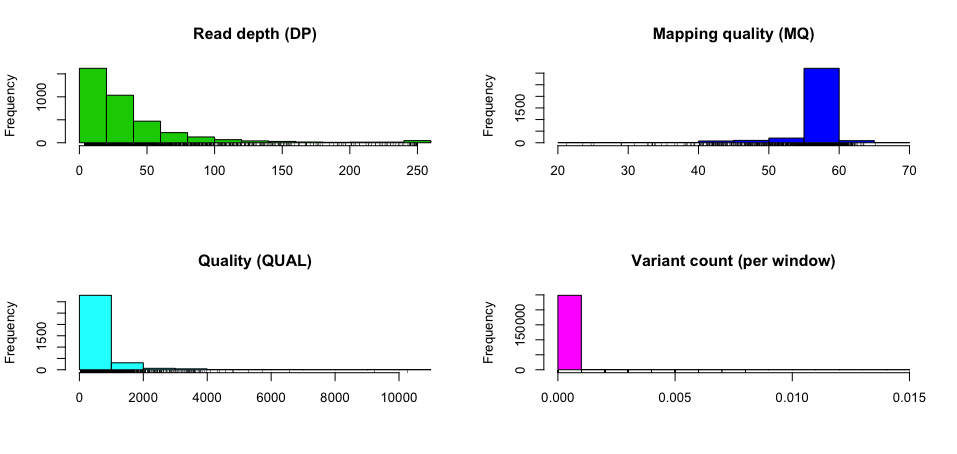

Learning the VCF format
Introduction


Natural selection occurs under three conditions:
- Genetic variation occurs among individuals (and this occurs mainly due to chance errors in replication)
- The genetic variation must be heritable, i.e. passed from one generation to the next, and
- The genetic variation results in varying fitness, i.e. individuals survive and reproduce with respect to genetic variation
The de facto file format for storing genetic variation is the Variant Call Format (VCF) and was developed under the 1000 Genomes Project. Currently, the Large Scale Genomics work stream of the Global Alliance for Genomics & Health (GA4GH) maintain the specification of the VCF (and other high-throughput sequencing data formats). A good starting point for learning about the VCF is this poster and a portion of the poster is displayed below.

Initially, VCFtools (and the associated scripts) was used for working with VCF files. VCFtools was also developed by the 1000 Genomes Project team but the tool does not seem to be actively maintained anymore. As VCF files are simply tab-delimited flat files, they are slow to process and the BCF was implemented, which is a more efficient format for data processing. A BCF file is the binary equivalent of a VCF file, akin to the SAM and BAM formats and BCFtools is used to work with BCF (and VCF) files. BCFtools is actively maintained and therefore should be used instead of VCFtools. To learn more about BCFtools (and SAMtools), check out the paper Twelve years of SAMtools and BCFtools and please cite it if you use BCFtools for your work.
Lastly, this README is created by create_readme.sh on GitHub Actions,
which executes readme.Rmd and creates README.md.
Installation
The easiest way to install BCFtools is by using Conda (and I recommend using Miniconda).
conda install -c bioconda bcftools
It is also relatively straightforward to compile on Linux (if your
system has all the prerequisites). The following code will install
BCFtools (and HTSlib and SAMtools, which you will most likely be using
as well) into the directory specified by dir=.
dir=$HOME/tools
ver=1.15
for tool in htslib bcftools samtools; do
check=${tool}
if [[ ${tool} == htslib ]]; then
check=bgzip
fi
if [[ ! -e ${dir}/bin/${check} ]]; then
url=https://github.com/samtools/${tool}/releases/download/${ver}/${tool}-${ver}.tar.bz2
wget ${url}
tar xjf ${tool}-${ver}.tar.bz2
cd ${tool}-${ver}
./configure --prefix=${dir}
make && make install
cd ..
rm -rf ${tool}-${ver}*
fi
done
Creating VCF example files
Example VCF files were generated to test the functionality of BCFtool
and other VCF tools. The aln.bt.vcf.gz, aln.hc.vcf.gz, and
aln.fb.vcf.gz VCF files were generated using a simple workflow
implemented in Groovy and processed by
Bpipe, a tool for running
bioinformatics workflows. You can view the workflow in
workflow/simple/pipeline.groovy, which carries out the following
steps: (i) a random reference sequence is generated, (ii) the reference
sequence is mutated, (iii) reads are derived from the mutated reference
then (iv) mapped back to the original non-mutated reference (v) and
finally variants are called using three separate tools: BCFtools,
HaplotypeCaller, and freebayes. Additional information is available in
this blog
post.
To run this workflow for yourself, run the following commands:
git clone https://github.com/davetang/learning_vcf_file.git
# installs the necessary tools
cd workflow && ./install.sh
# run the workflow using Bpipe
cd simple && make
If you want to play around with different parameters, simply edit the
variables at the start of workflow/simple/pipeline.groovy. The status
of this workflow is checked by GitHub
Actions and on successful
completion the final variant calls are copied to the eg folder; please
refer to .github/workflows/variant_call.yml for more details.
Usage
Running bcftools without any parameters will output the usage and the
subcommands. (The --help option is used below to avoid an exit code of
1 since this README is generated programmatically.)
bcftools --help
##
## Program: bcftools (Tools for variant calling and manipulating VCFs and BCFs)
## Version: 1.15 (using htslib 1.15)
##
## Usage: bcftools [--version|--version-only] [--help] <command> <argument>
##
## Commands:
##
## -- Indexing
## index index VCF/BCF files
##
## -- VCF/BCF manipulation
## annotate annotate and edit VCF/BCF files
## concat concatenate VCF/BCF files from the same set of samples
## convert convert VCF/BCF files to different formats and back
## head view VCF/BCF file headers
## isec intersections of VCF/BCF files
## merge merge VCF/BCF files files from non-overlapping sample sets
## norm left-align and normalize indels
## plugin user-defined plugins
## query transform VCF/BCF into user-defined formats
## reheader modify VCF/BCF header, change sample names
## sort sort VCF/BCF file
## view VCF/BCF conversion, view, subset and filter VCF/BCF files
##
## -- VCF/BCF analysis
## call SNP/indel calling
## consensus create consensus sequence by applying VCF variants
## cnv HMM CNV calling
## csq call variation consequences
## filter filter VCF/BCF files using fixed thresholds
## gtcheck check sample concordance, detect sample swaps and contamination
## mpileup multi-way pileup producing genotype likelihoods
## roh identify runs of autozygosity (HMM)
## stats produce VCF/BCF stats
##
## -- Plugins (collection of programs for calling, file manipulation & analysis)
## 38 plugins available, run "bcftools plugin -lv" to see a complete list
##
## Most commands accept VCF, bgzipped VCF, and BCF with the file type detected
## automatically even when streaming from a pipe. Indexed VCF and BCF will work
## in all situations. Un-indexed VCF and BCF and streams will work in most but
## not all situations.
Getting help
If BCFtools was installed by compiling the source code
with the path to the man pages added to MANPATH, you can simply run
man bcftools to access the manual pages for getting help. If BCFtools
was installed using Conda, the MANPATH environment variable needs to
be set
[accordingly]](https://github.com/conda/conda/issues/845#issuecomment-525223443).
The man pages provides additional information for each subcommand and
its parameters.
man bcftools | grep "LIST OF COMMANDS" -B 1984
## BCFTOOLS(1) BCFTOOLS(1)
##
## NAME
## bcftools - utilities for variant calling and manipulating VCFs and
## BCFs.
##
## SYNOPSIS
## bcftools [--version|--version-only] [--help] [COMMAND] [OPTIONS]
##
## DESCRIPTION
## BCFtools is a set of utilities that manipulate variant calls in the
## Variant Call Format (VCF) and its binary counterpart BCF. All commands
## work transparently with both VCFs and BCFs, both uncompressed and
## BGZF-compressed.
##
## Most commands accept VCF, bgzipped VCF and BCF with filetype detected
## automatically even when streaming from a pipe. Indexed VCF and BCF will
## work in all situations. Un-indexed VCF and BCF and streams will work in
## most, but not all situations. In general, whenever multiple VCFs are
## read simultaneously, they must be indexed and therefore also
## compressed. (Note that files with non-standard index names can be
## accessed as e.g. "bcftools view -r X:2928329
## file.vcf.gz##idx##non-standard-index-name".)
##
## BCFtools is designed to work on a stream. It regards an input file "-"
## as the standard input (stdin) and outputs to the standard output
## (stdout). Several commands can thus be combined with Unix pipes.
##
## VERSION
## This manual page was last updated 2022-02-21 and refers to bcftools git
## version 1.15.
##
## BCF1
## The BCF1 format output by versions of samtools <= 0.1.19 is not
## compatible with this version of bcftools. To read BCF1 files one can
## use the view command from old versions of bcftools packaged with
## samtools versions <= 0.1.19 to convert to VCF, which can then be read
## by this version of bcftools.
##
## samtools-0.1.19/bcftools/bcftools view file.bcf1 | bcftools view
##
## VARIANT CALLING
## See bcftools call for variant calling from the output of the samtools
## mpileup command. In versions of samtools <= 0.1.19 calling was done
## with bcftools view. Users are now required to choose between the old
## samtools calling model (-c/--consensus-caller) and the new multiallelic
## calling model (-m/--multiallelic-caller). The multiallelic calling
## model is recommended for most tasks.
##
## LIST OF COMMANDS
You can also open an issue and I will try to answer your question.
VCF to BCF and other conversions
Use bcftools view or bcftools convert to make conversions and use
--output-type u or --output-type b for uncompressed and compressed
BCF, respectively.
bcftools view -O u eg/aln.bt.vcf.gz > eg/aln.bt.un.bcf
bcftools view -O b eg/aln.bt.vcf.gz > eg/aln.bt.bcf
# uncompressed VCF
bcftools convert -O v eg/aln.bt.vcf.gz > eg/aln.bt.vcf
bcftools convert has more conversion options such as converting gVCF
to VCF and converting VCFs from IMPUTE2 and SHAPEIT.
Viewing a VCF/BCF file
Use bcftools view to view a VCF, bgzipped VCF, or BCF file; BCFtools
will automatically detect the format.
Viewing a VCF file.
bcftools view eg/aln.bt.vcf | grep -v "^#" | head -2
## 1000000 151 . T A 225.417 . DP=92;VDB=0.696932;SGB=-0.693147;FS=0;MQ0F=0;AC=2;AN=2;DP4=0,0,90,0;MQ=60 GT:PL 1/1:255,255,0
## 1000000 172 . TAA TA 142.185 . INDEL;IDV=75;IMF=0.914634;DP=82;VDB=0.712699;SGB=-0.693147;RPBZ=-4.35727;MQBZ=0;SCBZ=0;FS=0;MQ0F=0;AC=2;AN=2;DP4=7,0,75,0;MQ=60 GT:PL 1/1:169,117,0
Viewing a bgzipped VCF file.
bcftools view eg/aln.bt.vcf.gz | grep -v "^#" | head -2
## 1000000 151 . T A 225.417 . DP=92;VDB=0.696932;SGB=-0.693147;FS=0;MQ0F=0;AC=2;AN=2;DP4=0,0,90,0;MQ=60 GT:PL 1/1:255,255,0
## 1000000 172 . TAA TA 142.185 . INDEL;IDV=75;IMF=0.914634;DP=82;VDB=0.712699;SGB=-0.693147;RPBZ=-4.35727;MQBZ=0;SCBZ=0;FS=0;MQ0F=0;AC=2;AN=2;DP4=7,0,75,0;MQ=60 GT:PL 1/1:169,117,0
Viewing a BCF file.
bcftools view eg/aln.bt.vcf.gz | grep -v "^#" | head -2
## 1000000 151 . T A 225.417 . DP=92;VDB=0.696932;SGB=-0.693147;FS=0;MQ0F=0;AC=2;AN=2;DP4=0,0,90,0;MQ=60 GT:PL 1/1:255,255,0
## 1000000 172 . TAA TA 142.185 . INDEL;IDV=75;IMF=0.914634;DP=82;VDB=0.712699;SGB=-0.693147;RPBZ=-4.35727;MQBZ=0;SCBZ=0;FS=0;MQ0F=0;AC=2;AN=2;DP4=7,0,75,0;MQ=60 GT:PL 1/1:169,117,0
If you want to omit the header but do not want to type grep -v "^#",
you can use the -H option instead.
bcftools view -H eg/aln.bt.vcf.gz | head -2
## 1000000 151 . T A 225.417 . DP=92;VDB=0.696932;SGB=-0.693147;FS=0;MQ0F=0;AC=2;AN=2;DP4=0,0,90,0;MQ=60 GT:PL 1/1:255,255,0
## 1000000 172 . TAA TA 142.185 . INDEL;IDV=75;IMF=0.914634;DP=82;VDB=0.712699;SGB=-0.693147;RPBZ=-4.35727;MQBZ=0;SCBZ=0;FS=0;MQ0F=0;AC=2;AN=2;DP4=7,0,75,0;MQ=60 GT:PL 1/1:169,117,0
Comparing output types
The four output types will be compared on a VCF file produced by the 1000 Genomes Project.
- Compressed BCF (b)
- Uncompressed BCF (u)
- Compressed VCF (z)
- Uncompressed VCF (v).
Download and unzip.
wget --quiet https://davetang.org/file/ALL.chr1.phase3_shapeit2_mvncall_integrated_v5_related_samples.20130502.genotypes.vcf.gz -O eg/1kgp.vcf.gz
gunzip eg/1kgp.vcf.gz
VCF to compressed BCF.
time bcftools convert --threads 2 -O b -o eg/1kgp.bcf eg/1kgp.vcf
##
## real 0m17.641s
## user 0m30.388s
## sys 0m1.526s
VCF to uncompressed BCF.
time bcftools convert --threads 2 -O u -o eg/1kgp.un.bcf eg/1kgp.vcf
##
## real 0m16.254s
## user 0m30.481s
## sys 0m1.570s
VCF to compressed VCF.
time bcftools convert --threads 2 -O z -o eg/1kgp.vcf.gz eg/1kgp.vcf
##
## real 0m24.801s
## user 0m42.569s
## sys 0m2.099s
File sizes
du -h eg/1kgp.*
## 85M eg/1kgp.bcf
## 85M eg/1kgp.un.bcf
## 1.5G eg/1kgp.vcf
## 84M eg/1kgp.vcf.gz
VCF to PED
See my blog post.
VCF to BED
VCF to Browser Extensible
Data format and
not Binary PED
format; for Binary PED, see the plink directory in this repo. For
Browser Extensible Data use
BEDOPS,
specifically the
vcf2bed
tool.
Install using Conda from Bioconda.
conda install -c bioconda bedops
Check out example file.
cat eg/ex.vcf | grep -v "^#" | cut -f1-6
## 1 866511 rs60722469 C CCCCT 258.62
## 1 884091 rs7522415 C G 65.46
## 1 897730 rs7549631 C T 225.34
## 1 1158562 rs57524763 AAC A 220.99
## 1 25563113 . CC GG .
Convert to BED.
vcf2bed < eg/ex.vcf | cut -f1-3
## 1 866510 866511
## 1 884090 884091
## 1 897729 897730
## 1 1158561 1158562
## 1 25563112 25563113
Note above that the deletion (rs57524763) only has 1 nucleotide but the
reference should be 3 nucleotides long. Use --deletions to have the
coordinates reflect the length of the reference sequence (and to only
report deletions).
vcf2bed --deletions < eg/ex.vcf | cut -f1-3
## 1 1158561 1158564
There is also the insertions option to report only insertions
vcf2bed --insertions < eg/ex.vcf | cut -f1-3
## 1 866510 866511
To report SNVs use snvs but note the tool reports the MNP as a SNV and
the reference length is not 2 nucleotides long.
vcf2bed --snvs < eg/ex.vcf | cut -f1-3
## 1 884090 884091
## 1 897729 897730
## 1 25563112 25563113
Extracting INFO field/s
The VCF has various information fields; use the query subcommand to
extract specific field/s.
bcftools query -f 'DP=%DP\tAN=%AN\tAC=%AC\tMQ=%MQ\n' eg/aln.bt.vcf.gz | head -3
## DP=92 AN=2 AC=2 MQ=60
## DP=82 AN=2 AC=2 MQ=60
## DP=109 AN=2 AC=2 MQ=60
Combining with the view subcommand:
bcftools view -v snps eg/aln.bt.vcf.gz | bcftools query -f 'DP=%DP\tAN=%AN\tAC=%AC\tMQ=%MQ\n' - | head -3
## DP=92 AN=2 AC=2 MQ=60
## DP=109 AN=2 AC=2 MQ=60
## DP=102 AN=2 AC=2 MQ=60
Filtering
Many commands of BCFtools can be used for filtering
variants by
using the -f, --apply-filters or the -i, --include and -e,
--exclude parameters. We will download another example file to
demonstrate how to perform filtering.
wget --quiet https://davetang.org/file/ERR031940.merged.scored.filtered.bcf -O eg/ERR031940.bcf
To perform filtering on the FILTER column of the VCF file, use
bcftools view and the -f, --apply-filters parameter.
-f, --apply-filters <list> require at least one of the listed FILTER strings (e.g. "PASS,.")
Keep variants with CNN_2D_SNP_Tranche_99.90_100.00 in the FILTER
column.
bcftools view -H -f CNN_2D_SNP_Tranche_99.90_100.00 eg/ERR031940.bcf | wc -l
## 4505
Keep variants with CNN_2D_SNP_Tranche_99.90_100.00 and
CNN_2D_INDEL_Tranche_99.00_100.00 in the FILTER column.
bcftools view -H -f CNN_2D_SNP_Tranche_99.90_100.00,CNN_2D_INDEL_Tranche_99.00_100.00 eg/ERR031940.bcf | wc -l
## 4628
Keep variants that have passed filters, i.e. contain PASS in the
FILTER column.
bcftools view -H -f PASS eg/ERR031940.bcf | head -3
## chr1 69270 rs201219564 A G 689.06 PASS AC=2;AF=1;AN=2;BaseQRankSum=-2.373;CNN_2D=-5.123;DB;DP=32;ExcessHet=3.0103;FS=0;MLEAC=2;MLEAF=1;MQ=26.77;MQRankSum=0.472;QD=22.23;ReadPosRankSum=-1.37;SOR=4.615 GT:AD:DP:GQ:PL 1/1:2,29:31:33:703,33,0
## chr1 69511 rs2691305 A G 1425.06 PASS AC=2;AF=1;AN=2;BaseQRankSum=1.388;CNN_2D=-2.063;DB;DP=66;ExcessHet=3.0103;FS=4.847;MLEAC=2;MLEAF=1;MQ=36.21;MQRankSum=0.693;QD=24.57;ReadPosRankSum=0.928;SOR=1.544 GT:AD:DP:GQ:PL 1/1:1,57:58:99:1439,161,0
## chr1 69761 rs200505207 A T 957.05 PASS AC=2;AF=1;AN=2;BaseQRankSum=1.919;CNN_2D=-8.226;DB;DP=36;ExcessHet=3.0103;FS=32.516;MLEAC=2;MLEAF=1;MQ=30.18;MQRankSum=1.342;QD=26.58;ReadPosRankSum=0.086;SOR=5.607 GT:AD:DP:GQ:PL 1/1:3,33:36:26:971,26,0
The filter command can achieve the same filtering step as above.
bcftools filter -i 'FILTER="PASS"' eg/ERR031940.bcf | bcftools view -H - | head -3
## chr1 69270 rs201219564 A G 689.06 PASS AC=2;AF=1;AN=2;BaseQRankSum=-2.373;CNN_2D=-5.123;DB;DP=32;ExcessHet=3.0103;FS=0;MLEAC=2;MLEAF=1;MQ=26.77;MQRankSum=0.472;QD=22.23;ReadPosRankSum=-1.37;SOR=4.615 GT:AD:DP:GQ:PL 1/1:2,29:31:33:703,33,0
## chr1 69511 rs2691305 A G 1425.06 PASS AC=2;AF=1;AN=2;BaseQRankSum=1.388;CNN_2D=-2.063;DB;DP=66;ExcessHet=3.0103;FS=4.847;MLEAC=2;MLEAF=1;MQ=36.21;MQRankSum=0.693;QD=24.57;ReadPosRankSum=0.928;SOR=1.544 GT:AD:DP:GQ:PL 1/1:1,57:58:99:1439,161,0
## chr1 69761 rs200505207 A T 957.05 PASS AC=2;AF=1;AN=2;BaseQRankSum=1.919;CNN_2D=-8.226;DB;DP=36;ExcessHet=3.0103;FS=32.516;MLEAC=2;MLEAF=1;MQ=30.18;MQRankSum=1.342;QD=26.58;ReadPosRankSum=0.086;SOR=5.607 GT:AD:DP:GQ:PL 1/1:3,33:36:26:971,26,0
bcftools query can also perform the same filtering using -i,
--include but a format must be specified.
bcftools query -i 'FILTER="PASS"' -f '%CHROM %POS %FILTER\n' eg/ERR031940.bcf | head -3
## chr1 69270 PASS
## chr1 69511 PASS
## chr1 69761 PASS
Which command should be used for filtering? I would recommend using
bcftools filter for filtering since it clearly states that you are
performing filtering in the command name (it is clearer to someone not
familiar with BCFtools) and the -i and -e expressions are flexible
enough to perform most filtering requirements. Use bcftools query if
you want to perform filtering and modify the output. See man bcftools
for more information about EXPRESSIONS, which I recommend reading.
Different mutations
Use TYPE in the filtering expression to subset specific types of
variants; types include: indel, snp, mnp, ref, bnd, other, and overlap.
SNPs.
bcftools filter -i 'TYPE="snp"' eg/1kgp.bcf | grep -v "^#" | cut -f1-8 | head -2
## 1 10505 . A T 100 PASS AC=0;AN=62;NS=31;AF=0.000199681;SAS_AF=0;EUR_AF=0;AFR_AF=0.0008;AMR_AF=0;EAS_AF=0
## 1 10506 . C G 100 PASS AC=0;AN=62;NS=31;AF=0.000199681;SAS_AF=0;EUR_AF=0;AFR_AF=0.0008;AMR_AF=0;EAS_AF=0
Indels.
bcftools filter -i 'TYPE="indel"' eg/1kgp.bcf | grep -v "^#" | cut -f1-8 | head -2
## 1 10177 . A AC 100 PASS AC=19;AN=62;NS=31;AF=0.425319;SAS_AF=0.4949;EUR_AF=0.4056;AFR_AF=0.4909;AMR_AF=0.3602;EAS_AF=0.3363
## 1 10235 . T TA 100 PASS AC=0;AN=62;NS=31;AF=0.00119808;SAS_AF=0.0051;EUR_AF=0;AFR_AF=0;AMR_AF=0.0014;EAS_AF=0
Multiple Nucleotide Polymorphisms: The reference and alternate sequences are of the same length and have to be greater than 1 and all nucleotides in the sequences differ from one another.
bcftools filter -i 'TYPE="mnps"' eg/ex.vcf | grep -v "^#" | cut -f1-8
## 1 25563113 . CC GG . PASS AC=1;AF=0.5;AN=2;BaseQRankSum=2.621;DB;DP=20;FS=0;HRun=0;HaplotypeScore=101.749;MQ0=0;MQ=55.8;MQRankSum=-1.91;QD=11.05;ReadPosRankSum=0.4;set=variant
Not sure what ref refers to but possibly structural variants. INS:ME
refers to an insertion of a mobile element relative to the reference and
the <CN#> refers to Copy number allele: # copies according to the
VCF header.
bcftools view -v ref eg/1kgp.bcf | grep -v "^#" | cut -f1-8 | head -3
# filter returns nothing but view does
# bcftools filter -i 'TYPE="ref"' eg/1kgp.bcf | grep -v "^#" | cut -f1-8 | head -3
## 1 645710 ALU_umary_ALU_2 A <INS:ME:ALU> 100 PASS AC=0;AN=62;CS=ALU_umary;MEINFO=AluYa4_5,1,223,-;NS=31;SVLEN=222;SVTYPE=ALU;TSD=null;AF=0.00698882;SAS_AF=0.0041;EUR_AF=0.0189;AFR_AF=0;AMR_AF=0.0072;EAS_AF=0.0069
## 1 668630 DUP_delly_DUP20532 G <CN2> 100 PASS AC=2;AN=62;CIEND=-150,150;CIPOS=-150,150;CS=DUP_delly;END=850204;NS=31;SVLEN=181574;SVTYPE=DUP;IMPRECISE;AF=0.0127796;SAS_AF=0.001;EUR_AF=0.001;AFR_AF=0.0015;AMR_AF=0;EAS_AF=0.0595
## 1 713044 DUP_gs_CNV_1_713044_755966 C <CN0>,<CN2> 100 PASS AC=0,2;AN=62;CS=DUP_gs;END=755966;NS=31;SVTYPE=CNV;AF=0.000599042,0.0411342;SAS_AF=0,0.045;EUR_AF=0.001,0.0417;AFR_AF=0,0.0303;AMR_AF=0.0014,0.0259;EAS_AF=0.001,0.0615
Breakends (no variants of this class).
bcftools filter -i 'TYPE="bnd"' eg/1kgp.bcf
## ##fileformat=VCFv4.1
## ##FILTER=<ID=PASS,Description="All filters passed">
## ##fileDate=20140730
## ##reference=ftp://ftp.1000genomes.ebi.ac.uk//vol1/ftp/technical/reference/phase2_reference_assembly_sequence/hs37d5.fa.gz
## ##source=1000GenomesPhase3Pipeline
## ##contig=<ID=1,assembly=b37,length=249250621>
## ##contig=<ID=2,assembly=b37,length=243199373>
## ##contig=<ID=3,assembly=b37,length=198022430>
## ##contig=<ID=4,assembly=b37,length=191154276>
## ##contig=<ID=5,assembly=b37,length=180915260>
## ##contig=<ID=6,assembly=b37,length=171115067>
## ##contig=<ID=7,assembly=b37,length=159138663>
## ##contig=<ID=8,assembly=b37,length=146364022>
## ##contig=<ID=9,assembly=b37,length=141213431>
## ##contig=<ID=10,assembly=b37,length=135534747>
## ##contig=<ID=11,assembly=b37,length=135006516>
## ##contig=<ID=12,assembly=b37,length=133851895>
## ##contig=<ID=13,assembly=b37,length=115169878>
## ##contig=<ID=14,assembly=b37,length=107349540>
## ##contig=<ID=15,assembly=b37,length=102531392>
## ##contig=<ID=16,assembly=b37,length=90354753>
## ##contig=<ID=17,assembly=b37,length=81195210>
## ##contig=<ID=18,assembly=b37,length=78077248>
## ##contig=<ID=19,assembly=b37,length=59128983>
## ##contig=<ID=20,assembly=b37,length=63025520>
## ##contig=<ID=21,assembly=b37,length=48129895>
## ##contig=<ID=22,assembly=b37,length=51304566>
## ##contig=<ID=GL000191.1,assembly=b37,length=106433>
## ##contig=<ID=GL000192.1,assembly=b37,length=547496>
## ##contig=<ID=GL000193.1,assembly=b37,length=189789>
## ##contig=<ID=GL000194.1,assembly=b37,length=191469>
## ##contig=<ID=GL000195.1,assembly=b37,length=182896>
## ##contig=<ID=GL000196.1,assembly=b37,length=38914>
## ##contig=<ID=GL000197.1,assembly=b37,length=37175>
## ##contig=<ID=GL000198.1,assembly=b37,length=90085>
## ##contig=<ID=GL000199.1,assembly=b37,length=169874>
## ##contig=<ID=GL000200.1,assembly=b37,length=187035>
## ##contig=<ID=GL000201.1,assembly=b37,length=36148>
## ##contig=<ID=GL000202.1,assembly=b37,length=40103>
## ##contig=<ID=GL000203.1,assembly=b37,length=37498>
## ##contig=<ID=GL000204.1,assembly=b37,length=81310>
## ##contig=<ID=GL000205.1,assembly=b37,length=174588>
## ##contig=<ID=GL000206.1,assembly=b37,length=41001>
## ##contig=<ID=GL000207.1,assembly=b37,length=4262>
## ##contig=<ID=GL000208.1,assembly=b37,length=92689>
## ##contig=<ID=GL000209.1,assembly=b37,length=159169>
## ##contig=<ID=GL000210.1,assembly=b37,length=27682>
## ##contig=<ID=GL000211.1,assembly=b37,length=166566>
## ##contig=<ID=GL000212.1,assembly=b37,length=186858>
## ##contig=<ID=GL000213.1,assembly=b37,length=164239>
## ##contig=<ID=GL000214.1,assembly=b37,length=137718>
## ##contig=<ID=GL000215.1,assembly=b37,length=172545>
## ##contig=<ID=GL000216.1,assembly=b37,length=172294>
## ##contig=<ID=GL000217.1,assembly=b37,length=172149>
## ##contig=<ID=GL000218.1,assembly=b37,length=161147>
## ##contig=<ID=GL000219.1,assembly=b37,length=179198>
## ##contig=<ID=GL000220.1,assembly=b37,length=161802>
## ##contig=<ID=GL000221.1,assembly=b37,length=155397>
## ##contig=<ID=GL000222.1,assembly=b37,length=186861>
## ##contig=<ID=GL000223.1,assembly=b37,length=180455>
## ##contig=<ID=GL000224.1,assembly=b37,length=179693>
## ##contig=<ID=GL000225.1,assembly=b37,length=211173>
## ##contig=<ID=GL000226.1,assembly=b37,length=15008>
## ##contig=<ID=GL000227.1,assembly=b37,length=128374>
## ##contig=<ID=GL000228.1,assembly=b37,length=129120>
## ##contig=<ID=GL000229.1,assembly=b37,length=19913>
## ##contig=<ID=GL000230.1,assembly=b37,length=43691>
## ##contig=<ID=GL000231.1,assembly=b37,length=27386>
## ##contig=<ID=GL000232.1,assembly=b37,length=40652>
## ##contig=<ID=GL000233.1,assembly=b37,length=45941>
## ##contig=<ID=GL000234.1,assembly=b37,length=40531>
## ##contig=<ID=GL000235.1,assembly=b37,length=34474>
## ##contig=<ID=GL000236.1,assembly=b37,length=41934>
## ##contig=<ID=GL000237.1,assembly=b37,length=45867>
## ##contig=<ID=GL000238.1,assembly=b37,length=39939>
## ##contig=<ID=GL000239.1,assembly=b37,length=33824>
## ##contig=<ID=GL000240.1,assembly=b37,length=41933>
## ##contig=<ID=GL000241.1,assembly=b37,length=42152>
## ##contig=<ID=GL000242.1,assembly=b37,length=43523>
## ##contig=<ID=GL000243.1,assembly=b37,length=43341>
## ##contig=<ID=GL000244.1,assembly=b37,length=39929>
## ##contig=<ID=GL000245.1,assembly=b37,length=36651>
## ##contig=<ID=GL000246.1,assembly=b37,length=38154>
## ##contig=<ID=GL000247.1,assembly=b37,length=36422>
## ##contig=<ID=GL000248.1,assembly=b37,length=39786>
## ##contig=<ID=GL000249.1,assembly=b37,length=38502>
## ##contig=<ID=MT,assembly=b37,length=16569>
## ##contig=<ID=NC_007605,assembly=b37,length=171823>
## ##contig=<ID=X,assembly=b37,length=155270560>
## ##contig=<ID=Y,assembly=b37,length=59373566>
## ##contig=<ID=hs37d5,assembly=b37,length=35477943>
## ##ALT=<ID=CNV,Description="Copy Number Polymorphism">
## ##ALT=<ID=DEL,Description="Deletion">
## ##ALT=<ID=DUP,Description="Duplication">
## ##ALT=<ID=INS:ME:ALU,Description="Insertion of ALU element">
## ##ALT=<ID=INS:ME:LINE1,Description="Insertion of LINE1 element">
## ##ALT=<ID=INS:ME:SVA,Description="Insertion of SVA element">
## ##ALT=<ID=INS:MT,Description="Nuclear Mitochondrial Insertion">
## ##ALT=<ID=INV,Description="Inversion">
## ##ALT=<ID=CN0,Description="Copy number allele: 0 copies">
## ##ALT=<ID=CN1,Description="Copy number allele: 1 copy">
## ##ALT=<ID=CN2,Description="Copy number allele: 2 copies">
## ##ALT=<ID=CN3,Description="Copy number allele: 3 copies">
## ##ALT=<ID=CN4,Description="Copy number allele: 4 copies">
## ##ALT=<ID=CN5,Description="Copy number allele: 5 copies">
## ##ALT=<ID=CN6,Description="Copy number allele: 6 copies">
## ##ALT=<ID=CN7,Description="Copy number allele: 7 copies">
## ##ALT=<ID=CN8,Description="Copy number allele: 8 copies">
## ##ALT=<ID=CN9,Description="Copy number allele: 9 copies">
## ##ALT=<ID=CN10,Description="Copy number allele: 10 copies">
## ##ALT=<ID=CN11,Description="Copy number allele: 11 copies">
## ##ALT=<ID=CN12,Description="Copy number allele: 12 copies">
## ##ALT=<ID=CN13,Description="Copy number allele: 13 copies">
## ##ALT=<ID=CN14,Description="Copy number allele: 14 copies">
## ##ALT=<ID=CN15,Description="Copy number allele: 15 copies">
## ##ALT=<ID=CN16,Description="Copy number allele: 16 copies">
## ##ALT=<ID=CN17,Description="Copy number allele: 17 copies">
## ##ALT=<ID=CN18,Description="Copy number allele: 18 copies">
## ##ALT=<ID=CN19,Description="Copy number allele: 19 copies">
## ##ALT=<ID=CN20,Description="Copy number allele: 20 copies">
## ##ALT=<ID=CN21,Description="Copy number allele: 21 copies">
## ##ALT=<ID=CN22,Description="Copy number allele: 22 copies">
## ##ALT=<ID=CN23,Description="Copy number allele: 23 copies">
## ##ALT=<ID=CN24,Description="Copy number allele: 24 copies">
## ##ALT=<ID=CN25,Description="Copy number allele: 25 copies">
## ##ALT=<ID=CN26,Description="Copy number allele: 26 copies">
## ##ALT=<ID=CN27,Description="Copy number allele: 27 copies">
## ##ALT=<ID=CN28,Description="Copy number allele: 28 copies">
## ##ALT=<ID=CN29,Description="Copy number allele: 29 copies">
## ##ALT=<ID=CN30,Description="Copy number allele: 30 copies">
## ##ALT=<ID=CN31,Description="Copy number allele: 31 copies">
## ##ALT=<ID=CN32,Description="Copy number allele: 32 copies">
## ##ALT=<ID=CN33,Description="Copy number allele: 33 copies">
## ##ALT=<ID=CN34,Description="Copy number allele: 34 copies">
## ##ALT=<ID=CN35,Description="Copy number allele: 35 copies">
## ##ALT=<ID=CN36,Description="Copy number allele: 36 copies">
## ##ALT=<ID=CN37,Description="Copy number allele: 37 copies">
## ##ALT=<ID=CN38,Description="Copy number allele: 38 copies">
## ##ALT=<ID=CN39,Description="Copy number allele: 39 copies">
## ##ALT=<ID=CN40,Description="Copy number allele: 40 copies">
## ##ALT=<ID=CN41,Description="Copy number allele: 41 copies">
## ##ALT=<ID=CN42,Description="Copy number allele: 42 copies">
## ##ALT=<ID=CN43,Description="Copy number allele: 43 copies">
## ##ALT=<ID=CN44,Description="Copy number allele: 44 copies">
## ##ALT=<ID=CN45,Description="Copy number allele: 45 copies">
## ##ALT=<ID=CN46,Description="Copy number allele: 46 copies">
## ##ALT=<ID=CN47,Description="Copy number allele: 47 copies">
## ##ALT=<ID=CN48,Description="Copy number allele: 48 copies">
## ##ALT=<ID=CN49,Description="Copy number allele: 49 copies">
## ##ALT=<ID=CN50,Description="Copy number allele: 50 copies">
## ##ALT=<ID=CN51,Description="Copy number allele: 51 copies">
## ##ALT=<ID=CN52,Description="Copy number allele: 52 copies">
## ##ALT=<ID=CN53,Description="Copy number allele: 53 copies">
## ##ALT=<ID=CN54,Description="Copy number allele: 54 copies">
## ##ALT=<ID=CN55,Description="Copy number allele: 55 copies">
## ##ALT=<ID=CN56,Description="Copy number allele: 56 copies">
## ##ALT=<ID=CN57,Description="Copy number allele: 57 copies">
## ##ALT=<ID=CN58,Description="Copy number allele: 58 copies">
## ##ALT=<ID=CN59,Description="Copy number allele: 59 copies">
## ##ALT=<ID=CN60,Description="Copy number allele: 60 copies">
## ##ALT=<ID=CN61,Description="Copy number allele: 61 copies">
## ##ALT=<ID=CN62,Description="Copy number allele: 62 copies">
## ##ALT=<ID=CN63,Description="Copy number allele: 63 copies">
## ##ALT=<ID=CN64,Description="Copy number allele: 64 copies">
## ##ALT=<ID=CN65,Description="Copy number allele: 65 copies">
## ##ALT=<ID=CN66,Description="Copy number allele: 66 copies">
## ##ALT=<ID=CN67,Description="Copy number allele: 67 copies">
## ##ALT=<ID=CN68,Description="Copy number allele: 68 copies">
## ##ALT=<ID=CN69,Description="Copy number allele: 69 copies">
## ##ALT=<ID=CN70,Description="Copy number allele: 70 copies">
## ##ALT=<ID=CN71,Description="Copy number allele: 71 copies">
## ##ALT=<ID=CN72,Description="Copy number allele: 72 copies">
## ##ALT=<ID=CN73,Description="Copy number allele: 73 copies">
## ##ALT=<ID=CN74,Description="Copy number allele: 74 copies">
## ##ALT=<ID=CN75,Description="Copy number allele: 75 copies">
## ##ALT=<ID=CN76,Description="Copy number allele: 76 copies">
## ##ALT=<ID=CN77,Description="Copy number allele: 77 copies">
## ##ALT=<ID=CN78,Description="Copy number allele: 78 copies">
## ##ALT=<ID=CN79,Description="Copy number allele: 79 copies">
## ##ALT=<ID=CN80,Description="Copy number allele: 80 copies">
## ##ALT=<ID=CN81,Description="Copy number allele: 81 copies">
## ##ALT=<ID=CN82,Description="Copy number allele: 82 copies">
## ##ALT=<ID=CN83,Description="Copy number allele: 83 copies">
## ##ALT=<ID=CN84,Description="Copy number allele: 84 copies">
## ##ALT=<ID=CN85,Description="Copy number allele: 85 copies">
## ##ALT=<ID=CN86,Description="Copy number allele: 86 copies">
## ##ALT=<ID=CN87,Description="Copy number allele: 87 copies">
## ##ALT=<ID=CN88,Description="Copy number allele: 88 copies">
## ##ALT=<ID=CN89,Description="Copy number allele: 89 copies">
## ##ALT=<ID=CN90,Description="Copy number allele: 90 copies">
## ##ALT=<ID=CN91,Description="Copy number allele: 91 copies">
## ##ALT=<ID=CN92,Description="Copy number allele: 92 copies">
## ##ALT=<ID=CN93,Description="Copy number allele: 93 copies">
## ##ALT=<ID=CN94,Description="Copy number allele: 94 copies">
## ##ALT=<ID=CN95,Description="Copy number allele: 95 copies">
## ##ALT=<ID=CN96,Description="Copy number allele: 96 copies">
## ##ALT=<ID=CN97,Description="Copy number allele: 97 copies">
## ##ALT=<ID=CN98,Description="Copy number allele: 98 copies">
## ##ALT=<ID=CN99,Description="Copy number allele: 99 copies">
## ##ALT=<ID=CN100,Description="Copy number allele: 100 copies">
## ##ALT=<ID=CN101,Description="Copy number allele: 101 copies">
## ##ALT=<ID=CN102,Description="Copy number allele: 102 copies">
## ##ALT=<ID=CN103,Description="Copy number allele: 103 copies">
## ##ALT=<ID=CN104,Description="Copy number allele: 104 copies">
## ##ALT=<ID=CN105,Description="Copy number allele: 105 copies">
## ##ALT=<ID=CN106,Description="Copy number allele: 106 copies">
## ##ALT=<ID=CN107,Description="Copy number allele: 107 copies">
## ##ALT=<ID=CN108,Description="Copy number allele: 108 copies">
## ##ALT=<ID=CN109,Description="Copy number allele: 109 copies">
## ##ALT=<ID=CN110,Description="Copy number allele: 110 copies">
## ##ALT=<ID=CN111,Description="Copy number allele: 111 copies">
## ##ALT=<ID=CN112,Description="Copy number allele: 112 copies">
## ##ALT=<ID=CN113,Description="Copy number allele: 113 copies">
## ##ALT=<ID=CN114,Description="Copy number allele: 114 copies">
## ##ALT=<ID=CN115,Description="Copy number allele: 115 copies">
## ##ALT=<ID=CN116,Description="Copy number allele: 116 copies">
## ##ALT=<ID=CN117,Description="Copy number allele: 117 copies">
## ##ALT=<ID=CN118,Description="Copy number allele: 118 copies">
## ##ALT=<ID=CN119,Description="Copy number allele: 119 copies">
## ##ALT=<ID=CN120,Description="Copy number allele: 120 copies">
## ##ALT=<ID=CN121,Description="Copy number allele: 121 copies">
## ##ALT=<ID=CN122,Description="Copy number allele: 122 copies">
## ##ALT=<ID=CN123,Description="Copy number allele: 123 copies">
## ##ALT=<ID=CN124,Description="Copy number allele: 124 copies">
## ##INFO=<ID=AC,Number=A,Type=Integer,Description="Total number of alternate alleles in called genotypes">
## ##INFO=<ID=AF,Number=A,Type=Float,Description="Estimated allele frequency in the range (0,1)">
## ##INFO=<ID=AN,Number=1,Type=Integer,Description="Total number of alleles in called genotypes">
## ##INFO=<ID=CIEND,Number=2,Type=Integer,Description="Confidence interval around END for imprecise variants">
## ##INFO=<ID=CIPOS,Number=2,Type=Integer,Description="Confidence interval around POS for imprecise variants">
## ##INFO=<ID=CS,Number=1,Type=String,Description="Source call set.">
## ##INFO=<ID=END,Number=1,Type=Integer,Description="End coordinate of this variant">
## ##INFO=<ID=IMPRECISE,Number=0,Type=Flag,Description="Imprecise structural variation">
## ##INFO=<ID=MC,Number=.,Type=String,Description="Merged calls.">
## ##INFO=<ID=MEINFO,Number=4,Type=String,Description="Mobile element info of the form NAME,START,END<POLARITY; If there is only 5' OR 3' support for this call, will be NULL NULL for START and END">
## ##INFO=<ID=MEND,Number=1,Type=Integer,Description="Mitochondrial end coordinate of inserted sequence">
## ##INFO=<ID=MLEN,Number=1,Type=Integer,Description="Estimated length of mitochondrial insert">
## ##INFO=<ID=MSTART,Number=1,Type=Integer,Description="Mitochondrial start coordinate of inserted sequence">
## ##INFO=<ID=NS,Number=1,Type=Integer,Description="Number of samples with data">
## ##INFO=<ID=SVLEN,Number=.,Type=Integer,Description="Difference in length between REF and ALT alleles">
## ##INFO=<ID=SVTYPE,Number=1,Type=String,Description="Type of structural variant">
## ##INFO=<ID=TSD,Number=1,Type=String,Description="Precise Target Site Duplication for bases, if unknown, value will be NULL">
## ##FORMAT=<ID=GT,Number=1,Type=String,Description="Genotype">
## ##INFO=<ID=EAS_AF,Number=A,Type=Float,Description="Allele frequency in the EAS populations calculated from AC and AN, in the range (0,1)">
## ##INFO=<ID=EUR_AF,Number=A,Type=Float,Description="Allele frequency in the EUR populations calculated from AC and AN, in the range (0,1)">
## ##INFO=<ID=AFR_AF,Number=A,Type=Float,Description="Allele frequency in the AFR populations calculated from AC and AN, in the range (0,1)">
## ##INFO=<ID=AMR_AF,Number=A,Type=Float,Description="Allele frequency in the AMR populations calculated from AC and AN, in the range (0,1)">
## ##INFO=<ID=SAS_AF,Number=A,Type=Float,Description="Allele frequency in the SAS populations calculated from AC and AN, in the range (0,1)">
## ##bcftools_filterVersion=1.15+htslib-1.15
## ##bcftools_filterCommand=filter -i TYPE="bnd" eg/1kgp.bcf; Date=Wed Apr 6 04:39:22 2022
## #CHROM POS ID REF ALT QUAL FILTER INFO FORMAT HG00124 HG00501 HG00635 HG00702 HG00733 HG01983 HG02024 HG02046 HG02363 HG02372 HG02377 HG02381 HG02387 HG02388 HG03715 HG03948 NA19240 NA19311 NA19313 NA19660 NA19675 NA19685 NA19985 NA20322 NA20336 NA20341 NA20344 NA20526 NA20871 NA20893 NA20898
Others.
bcftools filter -i 'TYPE="other"' eg/1kgp.bcf | grep -v "^#" | cut -f1-8 | head -3
## 1 645710 ALU_umary_ALU_2 A <INS:ME:ALU> 100 PASS AC=0;AN=62;CS=ALU_umary;MEINFO=AluYa4_5,1,223,-;NS=31;SVLEN=222;SVTYPE=ALU;TSD=null;AF=0.00698882;SAS_AF=0.0041;EUR_AF=0.0189;AFR_AF=0;AMR_AF=0.0072;EAS_AF=0.0069
## 1 668630 DUP_delly_DUP20532 G <CN2> 100 PASS AC=2;AN=62;CIEND=-150,150;CIPOS=-150,150;CS=DUP_delly;END=850204;NS=31;SVLEN=181574;SVTYPE=DUP;IMPRECISE;AF=0.0127796;SAS_AF=0.001;EUR_AF=0.001;AFR_AF=0.0015;AMR_AF=0;EAS_AF=0.0595
## 1 713044 DUP_gs_CNV_1_713044_755966 C <CN0>,<CN2> 100 PASS AC=0,2;AN=62;CS=DUP_gs;END=755966;NS=31;SVTYPE=CNV;AF=0.000599042,0.0411342;SAS_AF=0,0.045;EUR_AF=0.001,0.0417;AFR_AF=0,0.0303;AMR_AF=0.0014,0.0259;EAS_AF=0.001,0.0615
Also not sure about overlap either.
bcftools filter -i 'TYPE="overlap"' eg/1kgp.bcf
## ##fileformat=VCFv4.1
## ##FILTER=<ID=PASS,Description="All filters passed">
## ##fileDate=20140730
## ##reference=ftp://ftp.1000genomes.ebi.ac.uk//vol1/ftp/technical/reference/phase2_reference_assembly_sequence/hs37d5.fa.gz
## ##source=1000GenomesPhase3Pipeline
## ##contig=<ID=1,assembly=b37,length=249250621>
## ##contig=<ID=2,assembly=b37,length=243199373>
## ##contig=<ID=3,assembly=b37,length=198022430>
## ##contig=<ID=4,assembly=b37,length=191154276>
## ##contig=<ID=5,assembly=b37,length=180915260>
## ##contig=<ID=6,assembly=b37,length=171115067>
## ##contig=<ID=7,assembly=b37,length=159138663>
## ##contig=<ID=8,assembly=b37,length=146364022>
## ##contig=<ID=9,assembly=b37,length=141213431>
## ##contig=<ID=10,assembly=b37,length=135534747>
## ##contig=<ID=11,assembly=b37,length=135006516>
## ##contig=<ID=12,assembly=b37,length=133851895>
## ##contig=<ID=13,assembly=b37,length=115169878>
## ##contig=<ID=14,assembly=b37,length=107349540>
## ##contig=<ID=15,assembly=b37,length=102531392>
## ##contig=<ID=16,assembly=b37,length=90354753>
## ##contig=<ID=17,assembly=b37,length=81195210>
## ##contig=<ID=18,assembly=b37,length=78077248>
## ##contig=<ID=19,assembly=b37,length=59128983>
## ##contig=<ID=20,assembly=b37,length=63025520>
## ##contig=<ID=21,assembly=b37,length=48129895>
## ##contig=<ID=22,assembly=b37,length=51304566>
## ##contig=<ID=GL000191.1,assembly=b37,length=106433>
## ##contig=<ID=GL000192.1,assembly=b37,length=547496>
## ##contig=<ID=GL000193.1,assembly=b37,length=189789>
## ##contig=<ID=GL000194.1,assembly=b37,length=191469>
## ##contig=<ID=GL000195.1,assembly=b37,length=182896>
## ##contig=<ID=GL000196.1,assembly=b37,length=38914>
## ##contig=<ID=GL000197.1,assembly=b37,length=37175>
## ##contig=<ID=GL000198.1,assembly=b37,length=90085>
## ##contig=<ID=GL000199.1,assembly=b37,length=169874>
## ##contig=<ID=GL000200.1,assembly=b37,length=187035>
## ##contig=<ID=GL000201.1,assembly=b37,length=36148>
## ##contig=<ID=GL000202.1,assembly=b37,length=40103>
## ##contig=<ID=GL000203.1,assembly=b37,length=37498>
## ##contig=<ID=GL000204.1,assembly=b37,length=81310>
## ##contig=<ID=GL000205.1,assembly=b37,length=174588>
## ##contig=<ID=GL000206.1,assembly=b37,length=41001>
## ##contig=<ID=GL000207.1,assembly=b37,length=4262>
## ##contig=<ID=GL000208.1,assembly=b37,length=92689>
## ##contig=<ID=GL000209.1,assembly=b37,length=159169>
## ##contig=<ID=GL000210.1,assembly=b37,length=27682>
## ##contig=<ID=GL000211.1,assembly=b37,length=166566>
## ##contig=<ID=GL000212.1,assembly=b37,length=186858>
## ##contig=<ID=GL000213.1,assembly=b37,length=164239>
## ##contig=<ID=GL000214.1,assembly=b37,length=137718>
## ##contig=<ID=GL000215.1,assembly=b37,length=172545>
## ##contig=<ID=GL000216.1,assembly=b37,length=172294>
## ##contig=<ID=GL000217.1,assembly=b37,length=172149>
## ##contig=<ID=GL000218.1,assembly=b37,length=161147>
## ##contig=<ID=GL000219.1,assembly=b37,length=179198>
## ##contig=<ID=GL000220.1,assembly=b37,length=161802>
## ##contig=<ID=GL000221.1,assembly=b37,length=155397>
## ##contig=<ID=GL000222.1,assembly=b37,length=186861>
## ##contig=<ID=GL000223.1,assembly=b37,length=180455>
## ##contig=<ID=GL000224.1,assembly=b37,length=179693>
## ##contig=<ID=GL000225.1,assembly=b37,length=211173>
## ##contig=<ID=GL000226.1,assembly=b37,length=15008>
## ##contig=<ID=GL000227.1,assembly=b37,length=128374>
## ##contig=<ID=GL000228.1,assembly=b37,length=129120>
## ##contig=<ID=GL000229.1,assembly=b37,length=19913>
## ##contig=<ID=GL000230.1,assembly=b37,length=43691>
## ##contig=<ID=GL000231.1,assembly=b37,length=27386>
## ##contig=<ID=GL000232.1,assembly=b37,length=40652>
## ##contig=<ID=GL000233.1,assembly=b37,length=45941>
## ##contig=<ID=GL000234.1,assembly=b37,length=40531>
## ##contig=<ID=GL000235.1,assembly=b37,length=34474>
## ##contig=<ID=GL000236.1,assembly=b37,length=41934>
## ##contig=<ID=GL000237.1,assembly=b37,length=45867>
## ##contig=<ID=GL000238.1,assembly=b37,length=39939>
## ##contig=<ID=GL000239.1,assembly=b37,length=33824>
## ##contig=<ID=GL000240.1,assembly=b37,length=41933>
## ##contig=<ID=GL000241.1,assembly=b37,length=42152>
## ##contig=<ID=GL000242.1,assembly=b37,length=43523>
## ##contig=<ID=GL000243.1,assembly=b37,length=43341>
## ##contig=<ID=GL000244.1,assembly=b37,length=39929>
## ##contig=<ID=GL000245.1,assembly=b37,length=36651>
## ##contig=<ID=GL000246.1,assembly=b37,length=38154>
## ##contig=<ID=GL000247.1,assembly=b37,length=36422>
## ##contig=<ID=GL000248.1,assembly=b37,length=39786>
## ##contig=<ID=GL000249.1,assembly=b37,length=38502>
## ##contig=<ID=MT,assembly=b37,length=16569>
## ##contig=<ID=NC_007605,assembly=b37,length=171823>
## ##contig=<ID=X,assembly=b37,length=155270560>
## ##contig=<ID=Y,assembly=b37,length=59373566>
## ##contig=<ID=hs37d5,assembly=b37,length=35477943>
## ##ALT=<ID=CNV,Description="Copy Number Polymorphism">
## ##ALT=<ID=DEL,Description="Deletion">
## ##ALT=<ID=DUP,Description="Duplication">
## ##ALT=<ID=INS:ME:ALU,Description="Insertion of ALU element">
## ##ALT=<ID=INS:ME:LINE1,Description="Insertion of LINE1 element">
## ##ALT=<ID=INS:ME:SVA,Description="Insertion of SVA element">
## ##ALT=<ID=INS:MT,Description="Nuclear Mitochondrial Insertion">
## ##ALT=<ID=INV,Description="Inversion">
## ##ALT=<ID=CN0,Description="Copy number allele: 0 copies">
## ##ALT=<ID=CN1,Description="Copy number allele: 1 copy">
## ##ALT=<ID=CN2,Description="Copy number allele: 2 copies">
## ##ALT=<ID=CN3,Description="Copy number allele: 3 copies">
## ##ALT=<ID=CN4,Description="Copy number allele: 4 copies">
## ##ALT=<ID=CN5,Description="Copy number allele: 5 copies">
## ##ALT=<ID=CN6,Description="Copy number allele: 6 copies">
## ##ALT=<ID=CN7,Description="Copy number allele: 7 copies">
## ##ALT=<ID=CN8,Description="Copy number allele: 8 copies">
## ##ALT=<ID=CN9,Description="Copy number allele: 9 copies">
## ##ALT=<ID=CN10,Description="Copy number allele: 10 copies">
## ##ALT=<ID=CN11,Description="Copy number allele: 11 copies">
## ##ALT=<ID=CN12,Description="Copy number allele: 12 copies">
## ##ALT=<ID=CN13,Description="Copy number allele: 13 copies">
## ##ALT=<ID=CN14,Description="Copy number allele: 14 copies">
## ##ALT=<ID=CN15,Description="Copy number allele: 15 copies">
## ##ALT=<ID=CN16,Description="Copy number allele: 16 copies">
## ##ALT=<ID=CN17,Description="Copy number allele: 17 copies">
## ##ALT=<ID=CN18,Description="Copy number allele: 18 copies">
## ##ALT=<ID=CN19,Description="Copy number allele: 19 copies">
## ##ALT=<ID=CN20,Description="Copy number allele: 20 copies">
## ##ALT=<ID=CN21,Description="Copy number allele: 21 copies">
## ##ALT=<ID=CN22,Description="Copy number allele: 22 copies">
## ##ALT=<ID=CN23,Description="Copy number allele: 23 copies">
## ##ALT=<ID=CN24,Description="Copy number allele: 24 copies">
## ##ALT=<ID=CN25,Description="Copy number allele: 25 copies">
## ##ALT=<ID=CN26,Description="Copy number allele: 26 copies">
## ##ALT=<ID=CN27,Description="Copy number allele: 27 copies">
## ##ALT=<ID=CN28,Description="Copy number allele: 28 copies">
## ##ALT=<ID=CN29,Description="Copy number allele: 29 copies">
## ##ALT=<ID=CN30,Description="Copy number allele: 30 copies">
## ##ALT=<ID=CN31,Description="Copy number allele: 31 copies">
## ##ALT=<ID=CN32,Description="Copy number allele: 32 copies">
## ##ALT=<ID=CN33,Description="Copy number allele: 33 copies">
## ##ALT=<ID=CN34,Description="Copy number allele: 34 copies">
## ##ALT=<ID=CN35,Description="Copy number allele: 35 copies">
## ##ALT=<ID=CN36,Description="Copy number allele: 36 copies">
## ##ALT=<ID=CN37,Description="Copy number allele: 37 copies">
## ##ALT=<ID=CN38,Description="Copy number allele: 38 copies">
## ##ALT=<ID=CN39,Description="Copy number allele: 39 copies">
## ##ALT=<ID=CN40,Description="Copy number allele: 40 copies">
## ##ALT=<ID=CN41,Description="Copy number allele: 41 copies">
## ##ALT=<ID=CN42,Description="Copy number allele: 42 copies">
## ##ALT=<ID=CN43,Description="Copy number allele: 43 copies">
## ##ALT=<ID=CN44,Description="Copy number allele: 44 copies">
## ##ALT=<ID=CN45,Description="Copy number allele: 45 copies">
## ##ALT=<ID=CN46,Description="Copy number allele: 46 copies">
## ##ALT=<ID=CN47,Description="Copy number allele: 47 copies">
## ##ALT=<ID=CN48,Description="Copy number allele: 48 copies">
## ##ALT=<ID=CN49,Description="Copy number allele: 49 copies">
## ##ALT=<ID=CN50,Description="Copy number allele: 50 copies">
## ##ALT=<ID=CN51,Description="Copy number allele: 51 copies">
## ##ALT=<ID=CN52,Description="Copy number allele: 52 copies">
## ##ALT=<ID=CN53,Description="Copy number allele: 53 copies">
## ##ALT=<ID=CN54,Description="Copy number allele: 54 copies">
## ##ALT=<ID=CN55,Description="Copy number allele: 55 copies">
## ##ALT=<ID=CN56,Description="Copy number allele: 56 copies">
## ##ALT=<ID=CN57,Description="Copy number allele: 57 copies">
## ##ALT=<ID=CN58,Description="Copy number allele: 58 copies">
## ##ALT=<ID=CN59,Description="Copy number allele: 59 copies">
## ##ALT=<ID=CN60,Description="Copy number allele: 60 copies">
## ##ALT=<ID=CN61,Description="Copy number allele: 61 copies">
## ##ALT=<ID=CN62,Description="Copy number allele: 62 copies">
## ##ALT=<ID=CN63,Description="Copy number allele: 63 copies">
## ##ALT=<ID=CN64,Description="Copy number allele: 64 copies">
## ##ALT=<ID=CN65,Description="Copy number allele: 65 copies">
## ##ALT=<ID=CN66,Description="Copy number allele: 66 copies">
## ##ALT=<ID=CN67,Description="Copy number allele: 67 copies">
## ##ALT=<ID=CN68,Description="Copy number allele: 68 copies">
## ##ALT=<ID=CN69,Description="Copy number allele: 69 copies">
## ##ALT=<ID=CN70,Description="Copy number allele: 70 copies">
## ##ALT=<ID=CN71,Description="Copy number allele: 71 copies">
## ##ALT=<ID=CN72,Description="Copy number allele: 72 copies">
## ##ALT=<ID=CN73,Description="Copy number allele: 73 copies">
## ##ALT=<ID=CN74,Description="Copy number allele: 74 copies">
## ##ALT=<ID=CN75,Description="Copy number allele: 75 copies">
## ##ALT=<ID=CN76,Description="Copy number allele: 76 copies">
## ##ALT=<ID=CN77,Description="Copy number allele: 77 copies">
## ##ALT=<ID=CN78,Description="Copy number allele: 78 copies">
## ##ALT=<ID=CN79,Description="Copy number allele: 79 copies">
## ##ALT=<ID=CN80,Description="Copy number allele: 80 copies">
## ##ALT=<ID=CN81,Description="Copy number allele: 81 copies">
## ##ALT=<ID=CN82,Description="Copy number allele: 82 copies">
## ##ALT=<ID=CN83,Description="Copy number allele: 83 copies">
## ##ALT=<ID=CN84,Description="Copy number allele: 84 copies">
## ##ALT=<ID=CN85,Description="Copy number allele: 85 copies">
## ##ALT=<ID=CN86,Description="Copy number allele: 86 copies">
## ##ALT=<ID=CN87,Description="Copy number allele: 87 copies">
## ##ALT=<ID=CN88,Description="Copy number allele: 88 copies">
## ##ALT=<ID=CN89,Description="Copy number allele: 89 copies">
## ##ALT=<ID=CN90,Description="Copy number allele: 90 copies">
## ##ALT=<ID=CN91,Description="Copy number allele: 91 copies">
## ##ALT=<ID=CN92,Description="Copy number allele: 92 copies">
## ##ALT=<ID=CN93,Description="Copy number allele: 93 copies">
## ##ALT=<ID=CN94,Description="Copy number allele: 94 copies">
## ##ALT=<ID=CN95,Description="Copy number allele: 95 copies">
## ##ALT=<ID=CN96,Description="Copy number allele: 96 copies">
## ##ALT=<ID=CN97,Description="Copy number allele: 97 copies">
## ##ALT=<ID=CN98,Description="Copy number allele: 98 copies">
## ##ALT=<ID=CN99,Description="Copy number allele: 99 copies">
## ##ALT=<ID=CN100,Description="Copy number allele: 100 copies">
## ##ALT=<ID=CN101,Description="Copy number allele: 101 copies">
## ##ALT=<ID=CN102,Description="Copy number allele: 102 copies">
## ##ALT=<ID=CN103,Description="Copy number allele: 103 copies">
## ##ALT=<ID=CN104,Description="Copy number allele: 104 copies">
## ##ALT=<ID=CN105,Description="Copy number allele: 105 copies">
## ##ALT=<ID=CN106,Description="Copy number allele: 106 copies">
## ##ALT=<ID=CN107,Description="Copy number allele: 107 copies">
## ##ALT=<ID=CN108,Description="Copy number allele: 108 copies">
## ##ALT=<ID=CN109,Description="Copy number allele: 109 copies">
## ##ALT=<ID=CN110,Description="Copy number allele: 110 copies">
## ##ALT=<ID=CN111,Description="Copy number allele: 111 copies">
## ##ALT=<ID=CN112,Description="Copy number allele: 112 copies">
## ##ALT=<ID=CN113,Description="Copy number allele: 113 copies">
## ##ALT=<ID=CN114,Description="Copy number allele: 114 copies">
## ##ALT=<ID=CN115,Description="Copy number allele: 115 copies">
## ##ALT=<ID=CN116,Description="Copy number allele: 116 copies">
## ##ALT=<ID=CN117,Description="Copy number allele: 117 copies">
## ##ALT=<ID=CN118,Description="Copy number allele: 118 copies">
## ##ALT=<ID=CN119,Description="Copy number allele: 119 copies">
## ##ALT=<ID=CN120,Description="Copy number allele: 120 copies">
## ##ALT=<ID=CN121,Description="Copy number allele: 121 copies">
## ##ALT=<ID=CN122,Description="Copy number allele: 122 copies">
## ##ALT=<ID=CN123,Description="Copy number allele: 123 copies">
## ##ALT=<ID=CN124,Description="Copy number allele: 124 copies">
## ##INFO=<ID=AC,Number=A,Type=Integer,Description="Total number of alternate alleles in called genotypes">
## ##INFO=<ID=AF,Number=A,Type=Float,Description="Estimated allele frequency in the range (0,1)">
## ##INFO=<ID=AN,Number=1,Type=Integer,Description="Total number of alleles in called genotypes">
## ##INFO=<ID=CIEND,Number=2,Type=Integer,Description="Confidence interval around END for imprecise variants">
## ##INFO=<ID=CIPOS,Number=2,Type=Integer,Description="Confidence interval around POS for imprecise variants">
## ##INFO=<ID=CS,Number=1,Type=String,Description="Source call set.">
## ##INFO=<ID=END,Number=1,Type=Integer,Description="End coordinate of this variant">
## ##INFO=<ID=IMPRECISE,Number=0,Type=Flag,Description="Imprecise structural variation">
## ##INFO=<ID=MC,Number=.,Type=String,Description="Merged calls.">
## ##INFO=<ID=MEINFO,Number=4,Type=String,Description="Mobile element info of the form NAME,START,END<POLARITY; If there is only 5' OR 3' support for this call, will be NULL NULL for START and END">
## ##INFO=<ID=MEND,Number=1,Type=Integer,Description="Mitochondrial end coordinate of inserted sequence">
## ##INFO=<ID=MLEN,Number=1,Type=Integer,Description="Estimated length of mitochondrial insert">
## ##INFO=<ID=MSTART,Number=1,Type=Integer,Description="Mitochondrial start coordinate of inserted sequence">
## ##INFO=<ID=NS,Number=1,Type=Integer,Description="Number of samples with data">
## ##INFO=<ID=SVLEN,Number=.,Type=Integer,Description="Difference in length between REF and ALT alleles">
## ##INFO=<ID=SVTYPE,Number=1,Type=String,Description="Type of structural variant">
## ##INFO=<ID=TSD,Number=1,Type=String,Description="Precise Target Site Duplication for bases, if unknown, value will be NULL">
## ##FORMAT=<ID=GT,Number=1,Type=String,Description="Genotype">
## ##INFO=<ID=EAS_AF,Number=A,Type=Float,Description="Allele frequency in the EAS populations calculated from AC and AN, in the range (0,1)">
## ##INFO=<ID=EUR_AF,Number=A,Type=Float,Description="Allele frequency in the EUR populations calculated from AC and AN, in the range (0,1)">
## ##INFO=<ID=AFR_AF,Number=A,Type=Float,Description="Allele frequency in the AFR populations calculated from AC and AN, in the range (0,1)">
## ##INFO=<ID=AMR_AF,Number=A,Type=Float,Description="Allele frequency in the AMR populations calculated from AC and AN, in the range (0,1)">
## ##INFO=<ID=SAS_AF,Number=A,Type=Float,Description="Allele frequency in the SAS populations calculated from AC and AN, in the range (0,1)">
## ##bcftools_filterVersion=1.15+htslib-1.15
## ##bcftools_filterCommand=filter -i TYPE="overlap" eg/1kgp.bcf; Date=Wed Apr 6 04:39:26 2022
## #CHROM POS ID REF ALT QUAL FILTER INFO FORMAT HG00124 HG00501 HG00635 HG00702 HG00733 HG01983 HG02024 HG02046 HG02363 HG02372 HG02377 HG02381 HG02387 HG02388 HG03715 HG03948 NA19240 NA19311 NA19313 NA19660 NA19675 NA19685 NA19985 NA20322 NA20336 NA20341 NA20344 NA20526 NA20871 NA20893 NA20898
Filtering VCF file using the INFO field/s
Use bcftools filter to filter out (-e or --exclude) variants. In
the example below we are filtering out variants that have a depth of
less than 200. We also use the -s parameter to name our filter and
this name will be displayed in the FILTER column.
bcftools filter -s "Depth200" -e "DP<200" eg/aln.bt.vcf.gz | grep -v "^##" | head -4
## #CHROM POS ID REF ALT QUAL FILTER INFO FORMAT test
## 1000000 151 . T A 225.417 Depth200 DP=92;VDB=0.696932;SGB=-0.693147;FS=0;MQ0F=0;AC=2;AN=2;DP4=0,0,90,0;MQ=60 GT:PL 1/1:255,255,0
## 1000000 172 . TAA TA 142.185 Depth200 INDEL;IDV=75;IMF=0.914634;DP=82;VDB=0.712699;SGB=-0.693147;RPBZ=-4.35727;MQBZ=0;SCBZ=0;FS=0;MQ0F=0;AC=2;AN=2;DP4=7,0,75,0;MQ=60 GT:PL 1/1:169,117,0
## 1000000 336 . A G 225.417 Depth200 DP=109;VDB=0.972083;SGB=-0.693147;FS=0;MQ0F=0;AC=2;AN=2;DP4=0,0,108,0;MQ=60 GT:PL 1/1:255,255,0
Use & to combine several other criteria.
bcftools filter -s "Depth200&VDB" -e "DP<200 & VDB<0.9" eg/aln.bt.vcf.gz | grep -v "^##" | head -4
## #CHROM POS ID REF ALT QUAL FILTER INFO FORMAT test
## 1000000 151 . T A 225.417 Depth200&VDB DP=92;VDB=0.696932;SGB=-0.693147;FS=0;MQ0F=0;AC=2;AN=2;DP4=0,0,90,0;MQ=60 GT:PL 1/1:255,255,0
## 1000000 172 . TAA TA 142.185 Depth200&VDB INDEL;IDV=75;IMF=0.914634;DP=82;VDB=0.712699;SGB=-0.693147;RPBZ=-4.35727;MQBZ=0;SCBZ=0;FS=0;MQ0F=0;AC=2;AN=2;DP4=7,0,75,0;MQ=60 GT:PL 1/1:169,117,0
## 1000000 336 . A G 225.417 PASS DP=109;VDB=0.972083;SGB=-0.693147;FS=0;MQ0F=0;AC=2;AN=2;DP4=0,0,108,0;MQ=60 GT:PL 1/1:255,255,0
Note that & and && have different meanings in the expression and
make a difference if you have more than one sample in your VCF file.
Using & requires that the conditions are satisfied within one sample
and && means that conditions can be satisfied across samples.
The -e or -i parameters accept an expression and we can use it to
perform calculations. In the example below, variants with a QD divided
by DP ratio of less than 0.3 are labelled with QD/DP; this ratio was
created for illustrative purposes only. Note that QD and DP are
prefixed with INFO/; this was done to explicitly state that we want
the QD and DP values from the INFO field, since there is also a DP value
in the FORMAT field. (This VCF file is different from the first
filtering example, which only had one DP value.)
bcftools filter -s "QD/DP" -e "INFO/QD / INFO/DP < 0.3" eg/aln.hc.vcf.gz | grep -v "^##" | head -4
## #CHROM POS ID REF ALT QUAL FILTER INFO FORMAT test
## 1000000 151 . T A 4111.06 QD/DP AC=2;AF=1;AN=2;DP=100;ExcessHet=0;FS=0;MLEAC=2;MLEAF=1;MQ=60;QD=25.36;SOR=9.065 GT:AD:DP:GQ:PL 1/1:0,92:92:99:4125,277,0
## 1000000 172 . TA T 3122.03 PASS AC=2;AF=1;AN=2;DP=89;ExcessHet=0;FS=0;MLEAC=2;MLEAF=1;MQ=60;QD=28.73;SOR=8.909 GT:AD:DP:GQ:PL 1/1:0,85:85:99:3136,256,0
## 1000000 336 . A G 4884.06 QD/DP AC=2;AF=1;AN=2;DP=115;ExcessHet=0;FS=0;MLEAC=2;MLEAF=1;MQ=60;QD=30.97;SOR=9.401 GT:AD:DP:GQ:PL 1/1:0,109:109:99:4898,328,0
Summarise SNPs and INDELs per sample
Use bcftools stats with the -s - parameter. The example VCF file
eg/ex.vcf has four variants across three samples (one, two, and
three).
- Sample one has two SNPs (both het) and one deletion (het)
- Sample two has two SNPs (one het and one hom alt) and insertion (het)
- Sample three has one SNP (het) and one insertion (hom alt) and one deletion (hom alt)
You can confirm the numbers from the stats output.
cat eg/ex.vcf | grep -v "^#"
## 1 866511 rs60722469 C CCCCT 258.62 PASS AC=2;AF=1.00;AN=2;DB;DP=11;FS=0.000;HRun=0;HaplotypeScore=41.3338;MQ0=0;MQ=61.94;QD=23.51;set=variant GT:AD:DP:GQ:PL 0/0:6,5:11:14.79:300,15,0 0/1:6,5:11:14.79:300,15,0 1/1:6,5:11:14.79:300,15,0
## 1 884091 rs7522415 C G 65.46 PASS AC=1;AF=0.50;AN=2;BaseQRankSum=-0.259;DB;DP=12;Dels=0.00;FS=0.000;HRun=1;HaplotypeScore=0.0000;MQ0=0;MQ=53.22;MQRankSum=0.779;QD=5.45;ReadPosRankSum=2.047;set=variant2 GT:AD:DP:GQ:PL 0/1:6,6:12:95.45:95,0,123 1/1:6,6:12:95.45:95,0,123 0/0:6,6:12:95.45:95,0,123
## 1 897730 rs7549631 C T 225.34 PASS AC=1;AF=0.50;AN=2;BaseQRankSum=-2.218;DB;DP=21;Dels=0.00;FS=6.419;HRun=1;HaplotypeScore=1.8410;MQ0=0;MQ=58.89;MQRankSum=-0.387;QD=10.73;ReadPosRankSum=-0.880;set=variant2 GT:AD:DP:GQ:PL 0/1:11,10:21:99:255,0,348 0/1:11,10:21:99:255,0,348 0/1:11,10:21:99:255,0,348
## 1 1158562 rs57524763 AAC A 220.99 PASS AC=1;AF=0.50;AN=2;BaseQRankSum=2.621;DB;DP=20;FS=0.000;HRun=0;HaplotypeScore=101.7487;MQ0=0;MQ=55.80;MQRankSum=-1.910;QD=11.05;ReadPosRankSum=0.400;set=variant GT:AD:DP:GQ:PL 0/1:14,6:20:99:260,0,486 0/0:14,6:20:99:260,0,486 1/1:14,6:20:99:260,0,486
## 1 25563113 . CC GG . PASS AC=1;AF=0.50;AN=2;BaseQRankSum=2.621;DB;DP=20;FS=0.000;HRun=0;HaplotypeScore=101.7487;MQ0=0;MQ=55.80;MQRankSum=-1.910;QD=11.05;ReadPosRankSum=0.400;set=variant GT:AD:DP:GQ:PL 0/1:14,6:20:99:260,0,486 0/0:14,6:20:99:260,0,486 1/1:14,6:20:99:260,0,486
bcftools stats -s - eg/ex.vcf | grep -A 4 "Per-sample counts"
## # PSC, Per-sample counts. Note that the ref/het/hom counts include only SNPs, for indels see PSI. The rest include both SNPs and indels.
## # PSC [2]id [3]sample [4]nRefHom [5]nNonRefHom [6]nHets [7]nTransitions [8]nTransversions [9]nIndels [10]average depth [11]nSingletons [12]nHapRef [13]nHapAlt [14]nMissing
## PSC 0 one 1 0 2 1 1 1 16.8 0 0 0 0
## PSC 0 two 2 1 1 1 1 1 16.8 0 0 0 0
## PSC 0 three 1 0 1 1 0 2 16.8 0 0 0 0
bcftools stats -s - eg/ex.vcf | grep -A 4 "Per-Sample Indels"
## # PSI, Per-Sample Indels. Note that alt-het genotypes with both ins and del allele are counted twice, in both nInsHets and nDelHets.
## # PSI [2]id [3]sample [4]in-frame [5]out-frame [6]not applicable [7]out/(in+out) ratio [8]nInsHets [9]nDelHets [10]nInsAltHoms [11]nDelAltHoms
## PSI 0 one 0 0 0 0.00 0 1 0 0
## PSI 0 two 0 0 0 0.00 1 0 0 0
## PSI 0 three 0 0 0 0.00 0 0 1 1
Add AF tag to a VCF file
The allele frequency tag (AF) is missing from the VCF file generated by
BCFtools call.
bcftools view -H eg/aln.bt.vcf.gz | head -1
## 1000000 151 . T A 225.417 . DP=92;VDB=0.696932;SGB=-0.693147;FS=0;MQ0F=0;AC=2;AN=2;DP4=0,0,90,0;MQ=60 GT:PL 1/1:255,255,0
The fill-tags plugin can add additional tags to a VCF file including
the AF tag.
bcftools plugin fill-tags eg/aln.bt.vcf.gz | grep -v "^#" | head -1
## 1000000 151 . T A 225.417 . DP=92;VDB=0.696932;SGB=-0.693147;FS=0;MQ0F=0;AC=2;AN=2;DP4=0,0,90,0;MQ=60;NS=1;AF=1;MAF=0;AC_Het=0;AC_Hom=2;AC_Hemi=0;HWE=1;ExcHet=1 GT:PL 1/1:255,255,0
Add custom annotations
The annotate function can be used to add additional
annotations
to a VCF file. You can use a VCF file or a tabix-indexed tab-delimited
file; if a tab-delimited file is used, an additional header file is
required.
To demonstrate, a tab-delimited file with incremental integers (fifth column) is created.
bcftools view -H eg/aln.bt.vcf.gz | head -3 | cut -f1,2,4,5 | perl -nle '$i++; print join("\t", $_, "$i")' > eg/test_anno.tsv
cat eg/test_anno.tsv
## 1000000 151 T A 1
## 1000000 172 TAA TA 2
## 1000000 336 A G 3
eg/test_anno.tsv needs to be tabix-indexed with the following
parameters:
-sspecifies the column for sequence names-bspecifies the column for region start/s-especifies the column for region end/s
bgzip eg/test_anno.tsv
tabix -s1 -b2 -e2 eg/test_anno.tsv.gz
Create header file.
echo -e "##INFO=<ID=INC,Number=1,Type=Integer,Description=\"Increment number\">" > eg/test_anno.hdr
Add INC annotation.
bcftools annotate -a eg/test_anno.tsv.gz -h eg/test_anno.hdr -c CHROM,POS,REF,ALT,INC eg/aln.bt.vcf.gz | grep -v "^##" | head -4
## #CHROM POS ID REF ALT QUAL FILTER INFO FORMAT test
## 1000000 151 . T A 225.417 . DP=92;VDB=0.696932;SGB=-0.693147;FS=0;MQ0F=0;AC=2;AN=2;DP4=0,0,90,0;MQ=60;INC=1 GT:PL 1/1:255,255,0
## 1000000 172 . TAA TA 142.185 . INDEL;IDV=75;IMF=0.914634;DP=82;VDB=0.712699;SGB=-0.693147;RPBZ=-4.35727;MQBZ=0;SCBZ=0;FS=0;MQ0F=0;AC=2;AN=2;DP4=7,0,75,0;MQ=60;INC=2 GT:PL 1/1:169,117,0
## 1000000 336 . A G 225.417 . DP=109;VDB=0.972083;SGB=-0.693147;FS=0;MQ0F=0;AC=2;AN=2;DP4=0,0,108,0;MQ=60;INC=3 GT:PL 1/1:255,255,0
To add the custom annotations to the ID column of the VCF file, specify
the ID column instead of the INFO tag with the -c parameter. (Note
that we no longer require the header file, since the ID column is a
standard column in the VCF.)
bcftools annotate -a eg/test_anno.tsv.gz -c CHROM,POS,REF,ALT,ID eg/aln.bt.vcf.gz | grep -v "^##" | head -4
## #CHROM POS ID REF ALT QUAL FILTER INFO FORMAT test
## 1000000 151 1 T A 225.417 . DP=92;VDB=0.696932;SGB=-0.693147;FS=0;MQ0F=0;AC=2;AN=2;DP4=0,0,90,0;MQ=60 GT:PL 1/1:255,255,0
## 1000000 172 2 TAA TA 142.185 . INDEL;IDV=75;IMF=0.914634;DP=82;VDB=0.712699;SGB=-0.693147;RPBZ=-4.35727;MQBZ=0;SCBZ=0;FS=0;MQ0F=0;AC=2;AN=2;DP4=7,0,75,0;MQ=60 GT:PL 1/1:169,117,0
## 1000000 336 3 A G 225.417 . DP=109;VDB=0.972083;SGB=-0.693147;FS=0;MQ0F=0;AC=2;AN=2;DP4=0,0,108,0;MQ=60 GT:PL 1/1:255,255,0
In addition, annotate can set IDs on-the-fly using information from
the VCF columns using the --set-id parameter.
bcftools annotate --set-id '%CHROM\_%POS\_%REF\_%FIRST_ALT' eg/aln.bt.vcf.gz | grep -v "^##" | head -4
## #CHROM POS ID REF ALT QUAL FILTER INFO FORMAT test
## 1000000 151 1000000_151_T_A T A 225.417 . DP=92;VDB=0.696932;SGB=-0.693147;FS=0;MQ0F=0;AC=2;AN=2;DP4=0,0,90,0;MQ=60 GT:PL 1/1:255,255,0
## 1000000 172 1000000_172_TAA_TA TAA TA 142.185 . INDEL;IDV=75;IMF=0.914634;DP=82;VDB=0.712699;SGB=-0.693147;RPBZ=-4.35727;MQBZ=0;SCBZ=0;FS=0;MQ0F=0;AC=2;AN=2;DP4=7,0,75,0;MQ=60 GT:PL 1/1:169,117,0
## 1000000 336 1000000_336_A_G A G 225.417 . DP=109;VDB=0.972083;SGB=-0.693147;FS=0;MQ0F=0;AC=2;AN=2;DP4=0,0,108,0;MQ=60 GT:PL 1/1:255,255,0
Check whether the REF sequence is correct
Change the reference sequence of variant at position 151 to G.
zcat eg/aln.bt.vcf.gz | perl -lane 'if($F[1] == 151){ $F[3] = G; print join("\t", @F) } else { print }' > eg/incorrect.vcf
Use bcftools norm with -c to check whether the REF sequence is
correct.
bcftools norm -f eg/test_31.fa -c w eg/incorrect.vcf > /dev/null
## REF_MISMATCH 1000000 151 G T
## Lines total/split/realigned/skipped: 10022/0/851/0
Random subset of variants
Total number of variants.
bcftools view -H eg/aln.bt.vcf.gz | wc -l
## 10022
A random sample can be achieved by using a Perl one-liner. In the
example below, the srand function sets the seed (for reproducibility)
and the float controls how many variants are outputted (1%). (Note that
the use of grep -v "^#" is only line counting purposes.)
bcftools view eg/aln.bt.vcf.gz | perl -nle 'BEGIN { srand(1984) } if (/^#/){ print; next }; print if rand(1) < 0.01' | grep -v "^#" | wc -l
## 106
Sub-sample 1% and save as BCF file.
bcftools view eg/aln.bt.vcf.gz | perl -nle 'BEGIN { srand(1984) } if (/^#/){ print; next }; print if rand(1) < 0.01' | bcftools view -O b - -o eg/aln.bt.ss.bcf
Sample 10%.
bcftools view eg/aln.bt.vcf.gz | perl -nle 'BEGIN { srand(1984) } if (/^#/){ print; next }; print if rand(1) < 0.1' | grep -v "^#" | wc -l
## 1019
Sorting
BCFtools has a sort function but the usage does not indicate the
sorting order. We can create a subsetted and shuffled VCF file and check
the order after sorting.
bcftools view -h eg/Pfeiffer.vcf > eg/Pfeiffer_header.vcf
bcftools view eg/Pfeiffer.vcf | perl -nle 'BEGIN { srand(1984) } if (/^#/){ next }; print if rand(1) < 0.01' | shuf > eg/Pfeiffer_shuf.txt
cat eg/Pfeiffer_header.vcf eg/Pfeiffer_shuf.txt > eg/Pfeiffer_shuf.vcf
bcftools view -H eg/Pfeiffer_shuf.vcf | head
## [W::vcf_parse_info] INFO 'GENE' is not defined in the header, assuming Type=String
## [W::vcf_parse_info] INFO 'INHERITANCE' is not defined in the header, assuming Type=String
## [W::vcf_parse_info] INFO 'MIM' is not defined in the header, assuming Type=String
## [W::vcf_parse_format] FORMAT 'DS' at 10:123256215 is not defined in the header, assuming Type=String
## [W::vcf_parse_format] FORMAT 'GL' at 10:123256215 is not defined in the header, assuming Type=String
## 14 106919176 . C CTG 472.68 PASS AC=1;AF=0.5;AN=2;BaseQRankSum=2.492;DP=17;FS=0;HRun=0;HaplotypeScore=187.218;MQ0=0;MQ=40.25;MQRankSum=-3.172;QD=27.8;ReadPosRankSum=0.34;set=variant GT:AD:DP:GQ:PL 0/1:8,8:17:99:512,0,167
## 9 90501500 rs34017995 G A 389.48 PASS AC=1;AF=0.5;AN=2;BaseQRankSum=3.586;DB;DP=25;Dels=0;FS=0;HRun=0;HaplotypeScore=0;MQ0=0;MQ=59.07;MQRankSum=-1.396;QD=15.58;ReadPosRankSum=0.246;set=variant2 GT:AD:DP:GQ:PL 0/1:11,14:25:99:419,0,251
## GL000241.1 17108 . A C 675.75 PASS AC=1;AF=0.5;AN=2;BaseQRankSum=6.617;DP=79;Dels=0;FS=0;HRun=0;HaplotypeScore=5.7331;MQ0=0;MQ=50.59;MQRankSum=-6.469;QD=8.55;ReadPosRankSum=0.183;set=variant2 GT:AD:DP:GQ:PL 0/1:44,35:79:99:706,0,1167
## 4 86952648 rs10025882 T C 151.46 PASS AC=1;AF=0.5;AN=2;BaseQRankSum=-1.532;DB;DP=11;Dels=0;FS=0;HRun=0;HaplotypeScore=0;MQ0=0;MQ=60;MQRankSum=0.825;QD=13.77;ReadPosRankSum=0.143;set=variant2 GT:AD:DP:GQ:PL 0/1:5,6:11:99:181,0,161
## 6 159192045 rs1038537 A G 125.02 PASS AC=1;AF=0.5;AN=2;BaseQRankSum=0.227;DB;DP=16;Dels=0;FS=0;HRun=1;HaplotypeScore=0;MQ0=0;MQ=60;MQRankSum=1.133;QD=7.81;ReadPosRankSum=-0.34;set=variant2 GT:AD:DP:GQ:PL 0/1:11,5:16:99:155,0,395
## GL000225.1 58202 . G A 623.71 PASS AC=1;AF=0.5;AN=2;BaseQRankSum=-0.942;DP=35;Dels=0;FS=2.58;HRun=1;HaplotypeScore=4.8919;MQ0=0;MQ=52.58;MQRankSum=1.439;QD=17.82;ReadPosRankSum=0.551;set=variant2 GT:AD:DP:GQ:PL 0/1:11,24:35:99:654,0,254
## 14 20295627 rs72663752 C G 1188.17 PASS AC=1;AF=0.5;AN=2;BaseQRankSum=0.414;DB;DP=121;Dels=0;FS=3.567;HRun=0;HaplotypeScore=0.9987;MQ0=0;MQ=58.03;MQRankSum=0.366;QD=9.82;ReadPosRankSum=2.058;set=variant2 GT:AD:DP:GQ:PL 0/1:75,46:121:99:1218,0,2019
## 3 52228150 rs411457 A T 164.03 PASS AC=1;AF=0.5;AN=2;BaseQRankSum=2.001;DB;DP=14;Dels=0;FS=0;HRun=1;HaplotypeScore=0;MQ0=0;MQ=58.2;MQRankSum=-0.065;QD=11.72;ReadPosRankSum=-0.452;set=variant2 GT:AD:DP:GQ:PL 0/1:8,6:14:99:194,0,206
## 2 96679384 rs2579517 C T 150.1 PASS AC=1;AF=0.5;AN=2;BaseQRankSum=-0.322;DB;DP=8;Dels=0;FS=0;HRun=2;HaplotypeScore=1.9468;MQ0=0;MQ=56.28;MQRankSum=1.92;QD=18.76;ReadPosRankSum=0.322;set=variant2 GT:AD:DP:GQ:PL 0/1:3,5:8:91.23:180,0,91
## 14 68042496 rs4902491 A G 120.3 PASS AC=1;AF=0.5;AN=2;BaseQRankSum=-1.92;DB;DP=8;Dels=0;FS=0;HRun=0;HaplotypeScore=0;MQ0=0;MQ=60;MQRankSum=0.684;QD=15.04;ReadPosRankSum=0.322;set=variant2 GT:AD:DP:GQ:PL 0/1:3,5:8:94.51:150,0,95
Sort.
bcftools sort eg/Pfeiffer_shuf.vcf > eg/Pfeiffer_sorted.vcf
## Writing to /tmp/bcftools.OgUru5
## Merging 1 temporary files
## Cleaning
## Done
Check first 10 lines.
bcftools view -H eg/Pfeiffer_sorted.vcf | head
## 1 10706167 . G A 519.75 PASS AC=1;AF=0.5;AN=2;BaseQRankSum=1.016;DP=24;Dels=0;FS=2.58;HRun=0;HaplotypeScore=0.8667;MQ0=0;MQ=60;MQRankSum=0.953;QD=21.66;ReadPosRankSum=-0.635;set=variant2 GT:AD:DP:GQ:PL 0/1:7,17:24:99:550,0,150
## 1 21798249 rs72872297 C G 693.02 PASS AC=1;AF=0.5;AN=2;BaseQRankSum=-2.637;DB;DP=70;Dels=0;FS=0;HRun=0;HaplotypeScore=4.3216;MQ0=0;MQ=57.77;MQRankSum=0.804;QD=9.9;ReadPosRankSum=-0.816;set=variant2 GT:AD:DP:GQ:PL 0/1:39,31:70:99:723,0,1093
## 1 22168216 rs7556412 C T 132.97 PASS AC=1;AF=0.5;AN=2;BaseQRankSum=2.367;DB;DP=12;Dels=0;FS=3.282;HRun=1;HaplotypeScore=0;MQ0=0;MQ=60;MQRankSum=0.831;QD=11.08;ReadPosRankSum=2.141;set=variant2 GT:AD:DP:GQ:PL 0/1:7,5:12:99:163,0,159
## 1 24383819 rs7540491 T C 355.27 PASS AC=1;AF=0.5;AN=2;BaseQRankSum=3.897;DB;DP=24;Dels=0;FS=9.582;HRun=0;HaplotypeScore=0.9665;MQ0=0;MQ=60;MQRankSum=-0.895;QD=14.8;ReadPosRankSum=-0.26;set=variant2 GT:AD:DP:GQ:PL 0/1:12,12:24:99:385,0,307
## 1 24859767 rs12061734 A C 297.1 PASS AC=1;AF=0.5;AN=2;BaseQRankSum=2.862;DB;DP=23;Dels=0;FS=3.834;HRun=0;HaplotypeScore=0;MQ0=0;MQ=58.36;MQRankSum=-0.277;QD=12.92;ReadPosRankSum=0.277;set=variant2 GT:AD:DP:GQ:PL 0/1:11,12:23:99:327,0,246
## 1 25098335 rs77984282 CA C 2179.77 PASS AC=1;AF=0.5;AN=2;BaseQRankSum=6.102;DB;DP=138;FS=2.162;HRun=2;HaplotypeScore=817.205;MQ0=0;MQ=59.36;MQRankSum=0.514;QD=15.8;ReadPosRankSum=1.164;set=variant GT:AD:DP:GQ:PL 0/1:70,68:138:99:2219,0,2674
## 1 34006598 rs12741094 C G 69.33 PASS AC=1;AF=0.5;AN=2;BaseQRankSum=-0.55;DB;DP=7;Dels=0;FS=0;HRun=0;HaplotypeScore=0;MQ0=0;MQ=60;MQRankSum=-0.55;QD=9.9;ReadPosRankSum=-1.3;set=variant2 GT:AD:DP:GQ:PL 0/1:4,3:7:99:99,0,142
## 1 34189957 rs11346874 AG A 210.16 PASS AC=2;AF=1;AN=2;DB;DP=7;FS=0;HRun=4;HaplotypeScore=18.582;MQ0=0;MQ=60;QD=30.02;set=variant GT:AD:DP:GQ:PL 1/1:0,7:7:21.06:252,21,0
## 1 36641729 rs2296263 C T 139.4 PASS AC=1;AF=0.5;AN=2;BaseQRankSum=0.387;DB;DP=11;Dels=0;FS=0;HRun=1;HaplotypeScore=0;MQ0=0;MQ=60;MQRankSum=1.186;QD=12.67;ReadPosRankSum=-0.466;set=variant2 GT:AD:DP:GQ:PL 0/1:6,5:11:99:169,0,141
## 1 45444038 rs11556200 G A 766.85 PASS AC=1;AF=0.5;AN=2;BaseQRankSum=1.513;DB;DP=82;Dels=0;FS=0;HRun=0;HaplotypeScore=0;MQ0=0;MQ=60;MQRankSum=-0.842;QD=9.35;ReadPosRankSum=-1.532;set=variant2 GT:AD:DP:GQ:PL 0/1:49,33:82:99:797,0,1220
Check chromosome order.
bcftools view -H eg/Pfeiffer_sorted.vcf | cut -f1 | uniq
## 1
## 10
## 11
## 12
## 13
## 14
## 15
## 16
## 17
## 18
## 19
## 2
## 20
## 21
## 22
## 3
## 4
## 5
## 6
## 7
## 8
## 9
## GL000220.1
## GL000225.1
## GL000231.1
## GL000241.1
## X
BCFtools sorts by lexical order (and there does not seem to be an option for another order).
If you use Linux, we can use the sort utility provided by your
distribution instead of bcftools sort; we just need to separate and
join the VCF header back. For this README, the following version of
sort was used.
sort --version
## sort (GNU coreutils) 8.30
## Copyright (C) 2018 Free Software Foundation, Inc.
## License GPLv3+: GNU GPL version 3 or later <https://gnu.org/licenses/gpl.html>.
## This is free software: you are free to change and redistribute it.
## There is NO WARRANTY, to the extent permitted by law.
##
## Written by Mike Haertel and Paul Eggert.
Sort using natural sort.
sort -k1,1V -k2,2n eg/Pfeiffer_shuf.txt > eg/Pfeiffer_ns.txt
cat eg/Pfeiffer_header.vcf eg/Pfeiffer_ns.txt > eg/Pfeiffer_ns.vcf
bcftools view -H eg/Pfeiffer_ns.vcf | cut -f1 | uniq
## 1
## 2
## 3
## 4
## 5
## 6
## 7
## 8
## 9
## 10
## 11
## 12
## 13
## 14
## 15
## 16
## 17
## 18
## 19
## 20
## 21
## 22
## GL000220.1
## GL000225.1
## GL000231.1
## GL000241.1
## X
Index a VCF file
An index is required for several tasks such as subsetting
variants. Using
either bcftools index or tabix seems to be fine, although they
generate indexes with different suffixes.
Using bcftools index to generate a csi index.
bcftools index eg/aln.hc.vcf.gz
bcftools view -H -r 1000000:100-1000 eg/aln.hc.vcf.gz
rm eg/aln.hc.vcf.gz.csi
## 1000000 151 . T A 4111.06 . AC=2;AF=1;AN=2;DP=100;ExcessHet=0;FS=0;MLEAC=2;MLEAF=1;MQ=60;QD=25.36;SOR=9.065 GT:AD:DP:GQ:PL 1/1:0,92:92:99:4125,277,0
## 1000000 172 . TA T 3122.03 . AC=2;AF=1;AN=2;DP=89;ExcessHet=0;FS=0;MLEAC=2;MLEAF=1;MQ=60;QD=28.73;SOR=8.909 GT:AD:DP:GQ:PL 1/1:0,85:85:99:3136,256,0
## 1000000 336 . A G 4884.06 . AC=2;AF=1;AN=2;DP=115;ExcessHet=0;FS=0;MLEAC=2;MLEAF=1;MQ=60;QD=30.97;SOR=9.401 GT:AD:DP:GQ:PL 1/1:0,109:109:99:4898,328,0
## 1000000 415 . C A 4569.06 . AC=2;AF=1;AN=2;DP=106;ExcessHet=0;FS=0;MLEAC=2;MLEAF=1;MQ=60;QD=27.24;SOR=3.442 GT:AD:DP:GQ:PL 1/1:0,102:102:99:4583,307,0
## 1000000 733 . G T 9279.06 . AC=2;AF=1;AN=2;DP=215;ExcessHet=0;FS=0;MLEAC=2;MLEAF=1;MQ=60;QD=28.2;SOR=0.814 GT:AD:DP:GQ:PL 1/1:0,208:208:99:9293,626,0
Using tabix to generate a tbi index.
tabix eg/aln.hc.vcf.gz
bcftools view -H -r 1000000:100-1000 eg/aln.hc.vcf.gz
rm eg/aln.hc.vcf.gz.tbi
## 1000000 151 . T A 4111.06 . AC=2;AF=1;AN=2;DP=100;ExcessHet=0;FS=0;MLEAC=2;MLEAF=1;MQ=60;QD=25.36;SOR=9.065 GT:AD:DP:GQ:PL 1/1:0,92:92:99:4125,277,0
## 1000000 172 . TA T 3122.03 . AC=2;AF=1;AN=2;DP=89;ExcessHet=0;FS=0;MLEAC=2;MLEAF=1;MQ=60;QD=28.73;SOR=8.909 GT:AD:DP:GQ:PL 1/1:0,85:85:99:3136,256,0
## 1000000 336 . A G 4884.06 . AC=2;AF=1;AN=2;DP=115;ExcessHet=0;FS=0;MLEAC=2;MLEAF=1;MQ=60;QD=30.97;SOR=9.401 GT:AD:DP:GQ:PL 1/1:0,109:109:99:4898,328,0
## 1000000 415 . C A 4569.06 . AC=2;AF=1;AN=2;DP=106;ExcessHet=0;FS=0;MLEAC=2;MLEAF=1;MQ=60;QD=27.24;SOR=3.442 GT:AD:DP:GQ:PL 1/1:0,102:102:99:4583,307,0
## 1000000 733 . G T 9279.06 . AC=2;AF=1;AN=2;DP=215;ExcessHet=0;FS=0;MLEAC=2;MLEAF=1;MQ=60;QD=28.2;SOR=0.814 GT:AD:DP:GQ:PL 1/1:0,208:208:99:9293,626,0
Subset variants within a specific genomic region
Use bcftools view with -r or -R, which requires an index file. You
can use bcftools view with -t or -T, which does not require an
index file, but is much slower because the entire file is streamed.
tabix -f eg/1kgp.bcf
time bcftools view -H -r 1:55000000-56000000 eg/1kgp.bcf | wc -l
## 31036
##
## real 0m0.075s
## user 0m0.080s
## sys 0m0.016s
bcftools view with -t streams the entire file, so is much slower.
time bcftools view -H -t 1:55000000-56000000 eg/1kgp.bcf | wc -l
## 31036
##
## real 0m3.941s
## user 0m3.900s
## sys 0m0.061s
Use commas to list more than one loci.
bcftools view -H -r 1:10000-50000,1:100000-200000,1:55000000-56000000 eg/1kgp.bcf | wc -l
## 31382
Or use a BED file to store regions of interest.
echo -e "1\t10000\t50000\n1\t100000\t200000\n1\t55000000\t56000000" > eg/regions.bed
bcftools view -H -R eg/regions.bed eg/1kgp.bcf | wc -l
## 31382
Output sample names
Use bcftools query.
bcftools query -l eg/1kgp.vcf.gz | head -5
## HG00124
## HG00501
## HG00635
## HG00702
## HG00733
Rename sample names
Use reheader to rename samples in a VCF using a text file containing
the new sample names (one per line). Note that the default output format
for reheader is BCF (with no option for another format).
Old sample names.
bcftools query -l eg/1001genomes_snp-short-indel_only_ACGTN_5000.vcf.gz | head -5
## 88
## 108
## 139
## 159
## 265
Rename VCF file using new sample names in eg/sample_name.txt.
num_sample=$(bcftools query -l eg/1001genomes_snp-short-indel_only_ACGTN_5000.vcf.gz | wc -l)
for (( i = 0 ; i < ${num_sample} ; i++ )); do echo ${i}; done > eg/sample_name.txt
bcftools reheader -s eg/sample_name.txt eg/1001genomes_snp-short-indel_only_ACGTN_5000.vcf.gz | bcftools view -h - | tail -1
## #CHROM POS ID REF ALT QUAL FILTER INFO FORMAT 0 1 2 3 4 5 6 7 8 9 10 11 12 13 14 15 16 17 18 19 20 21 22 23 24 25 26 27 28 29 30 31 32 33 34 35 36 37 38 39 40 41 42 43 44 45 46 47 48 49 50 51 52 53 54 55 56 57 58 59 60 61 62 63 64 65 66 67 68 69 70 71 72 73 74 75 76 77 78 79 80 81 82 83 84 85 86 87 88 89 90 91 92 93 94 95 96 97 98 99 100 101 102 103 104 105 106 107 108 109 110 111 112 113 114 115 116 117 118 119 120 121 122 123 124 125 126 127 128 129 130 131 132 133 134 135 136 137 138 139 140 141 142 143 144 145 146 147 148 149 150 151 152 153 154 155 156 157 158 159 160 161 162 163 164 165 166 167 168 169 170 171 172 173 174 175 176 177 178 179 180 181 182 183 184 185 186 187 188 189 190 191 192 193 194 195 196 197 198 199 200 201 202 203 204 205 206 207 208 209 210 211 212 213 214 215 216 217 218 219 220 221 222 223 224 225 226 227 228 229 230 231 232 233 234 235 236 237 238 239 240 241 242 243 244 245 246 247 248 249 250 251 252 253 254 255 256 257 258 259 260 261 262 263 264 265 266 267 268 269 270 271 272 273 274 275 276 277 278 279 280 281 282 283 284 285 286 287 288 289 290 291 292 293 294 295 296 297 298 299 300 301 302 303 304 305 306 307 308 309 310 311 312 313 314 315 316 317 318 319 320 321 322 323 324 325 326 327 328 329 330 331 332 333 334 335 336 337 338 339 340 341 342 343 344 345 346 347 348 349 350 351 352 353 354 355 356 357 358 359 360 361 362 363 364 365 366 367 368 369 370 371 372 373 374 375 376 377 378 379 380 381 382 383 384 385 386 387 388 389 390 391 392 393 394 395 396 397 398 399 400 401 402 403 404 405 406 407 408 409 410 411 412 413 414 415 416 417 418 419 420 421 422 423 424 425 426 427 428 429 430 431 432 433 434 435 436 437 438 439 440 441 442 443 444 445 446 447 448 449 450 451 452 453 454 455 456 457 458 459 460 461 462 463 464 465 466 467 468 469 470 471 472 473 474 475 476 477 478 479 480 481 482 483 484 485 486 487 488 489 490 491 492 493 494 495 496 497 498 499 500 501 502 503 504 505 506 507 508 509 510 511 512 513 514 515 516 517 518 519 520 521 522 523 524 525 526 527 528 529 530 531 532 533 534 535 536 537 538 539 540 541 542 543 544 545 546 547 548 549 550 551 552 553 554 555 556 557 558 559 560 561 562 563 564 565 566 567 568 569 570 571 572 573 574 575 576 577 578 579 580 581 582 583 584 585 586 587 588 589 590 591 592 593 594 595 596 597 598 599 600 601 602 603 604 605 606 607 608 609 610 611 612 613 614 615 616 617 618 619 620 621 622 623 624 625 626 627 628 629 630 631 632 633 634 635 636 637 638 639 640 641 642 643 644 645 646 647 648 649 650 651 652 653 654 655 656 657 658 659 660 661 662 663 664 665 666 667 668 669 670 671 672 673 674 675 676 677 678 679 680 681 682 683 684 685 686 687 688 689 690 691 692 693 694 695 696 697 698 699 700 701 702 703 704 705 706 707 708 709 710 711 712 713 714 715 716 717 718 719 720 721 722 723 724 725 726 727 728 729 730 731 732 733 734 735 736 737 738 739 740 741 742 743 744 745 746 747 748 749 750 751 752 753 754 755 756 757 758 759 760 761 762 763 764 765 766 767 768 769 770 771 772 773 774 775 776 777 778 779 780 781 782 783 784 785 786 787 788 789 790 791 792 793 794 795 796 797 798 799 800 801 802 803 804 805 806 807 808 809 810 811 812 813 814 815 816 817 818 819 820 821 822 823 824 825 826 827 828 829 830 831 832 833 834 835 836 837 838 839 840 841 842 843 844 845 846 847 848 849 850 851 852 853 854 855 856 857 858 859 860 861 862 863 864 865 866 867 868 869 870 871 872 873 874 875 876 877 878 879 880 881 882 883 884 885 886 887 888 889 890 891 892 893 894 895 896 897 898 899 900 901 902 903 904 905 906 907 908 909 910 911 912 913 914 915 916 917 918 919 920 921 922 923 924 925 926 927 928 929 930 931 932 933 934 935 936 937 938 939 940 941 942 943 944 945 946 947 948 949 950 951 952 953 954 955 956 957 958 959 960 961 962 963 964 965 966 967 968 969 970 971 972 973 974 975 976 977 978 979 980 981 982 983 984 985 986 987 988 989 990 991 992 993 994 995 996 997 998 999 1000 1001 1002 1003 1004 1005 1006 1007 1008 1009 1010 1011 1012 1013 1014 1015 1016 1017 1018 1019 1020 1021 1022 1023 1024 1025 1026 1027 1028 1029 1030 1031 1032 1033 1034 1035 1036 1037 1038 1039 1040 1041 1042 1043 1044 1045 1046 1047 1048 1049 1050 1051 1052 1053 1054 1055 1056 1057 1058 1059 1060 1061 1062 1063 1064 1065 1066 1067 1068 1069 1070 1071 1072 1073 1074 1075 1076 1077 1078 1079 1080 1081 1082 1083 1084 1085 1086 1087 1088 1089 1090 1091 1092 1093 1094 1095 1096 1097 1098 1099 1100 1101 1102 1103 1104 1105 1106 1107 1108 1109 1110 1111 1112 1113 1114 1115 1116 1117 1118 1119 1120 1121 1122 1123 1124 1125 1126 1127 1128 1129 1130 1131 1132 1133 1134
Remove header info
The reheader command can also be used to modify the header
information, such as removing specific info. For example if we want to
remove GATKCommandLine, we would first create a new header file and
use it to generate a new header.
GATKCommandLine exists in the header before running reheader.
bcftools view -h eg/aln.hc.vcf.gz | grep GATKCommandLine
## ##GATKCommandLine=<ID=HaplotypeCaller,CommandLine="HaplotypeCaller --output aln.hc.vcf --input aln.bam --reference test_31.fa --use-posteriors-to-calculate-qual false --dont-use-dragstr-priors false --use-new-qual-calculator true --annotate-with-num-discovered-alleles false --heterozygosity 0.001 --indel-heterozygosity 1.25E-4 --heterozygosity-stdev 0.01 --standard-min-confidence-threshold-for-calling 30.0 --max-alternate-alleles 6 --max-genotype-count 1024 --sample-ploidy 2 --num-reference-samples-if-no-call 0 --genotype-assignment-method USE_PLS_TO_ASSIGN --contamination-fraction-to-filter 0.0 --output-mode EMIT_VARIANTS_ONLY --all-site-pls false --gvcf-gq-bands 1 --gvcf-gq-bands 2 --gvcf-gq-bands 3 --gvcf-gq-bands 4 --gvcf-gq-bands 5 --gvcf-gq-bands 6 --gvcf-gq-bands 7 --gvcf-gq-bands 8 --gvcf-gq-bands 9 --gvcf-gq-bands 10 --gvcf-gq-bands 11 --gvcf-gq-bands 12 --gvcf-gq-bands 13 --gvcf-gq-bands 14 --gvcf-gq-bands 15 --gvcf-gq-bands 16 --gvcf-gq-bands 17 --gvcf-gq-bands 18 --gvcf-gq-bands 19 --gvcf-gq-bands 20 --gvcf-gq-bands 21 --gvcf-gq-bands 22 --gvcf-gq-bands 23 --gvcf-gq-bands 24 --gvcf-gq-bands 25 --gvcf-gq-bands 26 --gvcf-gq-bands 27 --gvcf-gq-bands 28 --gvcf-gq-bands 29 --gvcf-gq-bands 30 --gvcf-gq-bands 31 --gvcf-gq-bands 32 --gvcf-gq-bands 33 --gvcf-gq-bands 34 --gvcf-gq-bands 35 --gvcf-gq-bands 36 --gvcf-gq-bands 37 --gvcf-gq-bands 38 --gvcf-gq-bands 39 --gvcf-gq-bands 40 --gvcf-gq-bands 41 --gvcf-gq-bands 42 --gvcf-gq-bands 43 --gvcf-gq-bands 44 --gvcf-gq-bands 45 --gvcf-gq-bands 46 --gvcf-gq-bands 47 --gvcf-gq-bands 48 --gvcf-gq-bands 49 --gvcf-gq-bands 50 --gvcf-gq-bands 51 --gvcf-gq-bands 52 --gvcf-gq-bands 53 --gvcf-gq-bands 54 --gvcf-gq-bands 55 --gvcf-gq-bands 56 --gvcf-gq-bands 57 --gvcf-gq-bands 58 --gvcf-gq-bands 59 --gvcf-gq-bands 60 --gvcf-gq-bands 70 --gvcf-gq-bands 80 --gvcf-gq-bands 90 --gvcf-gq-bands 99 --floor-blocks false --indel-size-to-eliminate-in-ref-model 10 --disable-optimizations false --dragen-mode false --apply-bqd false --apply-frd false --disable-spanning-event-genotyping false --transform-dragen-mapping-quality false --mapping-quality-threshold-for-genotyping 20 --max-effective-depth-adjustment-for-frd 0 --just-determine-active-regions false --dont-genotype false --do-not-run-physical-phasing false --do-not-correct-overlapping-quality false --use-filtered-reads-for-annotations false --adaptive-pruning false --do-not-recover-dangling-branches false --recover-dangling-heads false --kmer-size 10 --kmer-size 25 --dont-increase-kmer-sizes-for-cycles false --allow-non-unique-kmers-in-ref false --num-pruning-samples 1 --min-dangling-branch-length 4 --recover-all-dangling-branches false --max-num-haplotypes-in-population 128 --min-pruning 2 --adaptive-pruning-initial-error-rate 0.001 --pruning-lod-threshold 2.302585092994046 --pruning-seeding-lod-threshold 9.210340371976184 --max-unpruned-variants 100 --linked-de-bruijn-graph false --disable-artificial-haplotype-recovery false --enable-legacy-graph-cycle-detection false --debug-assembly false --debug-graph-transformations false --capture-assembly-failure-bam false --num-matching-bases-in-dangling-end-to-recover -1 --error-correction-log-odds -Infinity --error-correct-reads false --kmer-length-for-read-error-correction 25 --min-observations-for-kmer-to-be-solid 20 --base-quality-score-threshold 18 --dragstr-het-hom-ratio 2 --dont-use-dragstr-pair-hmm-scores false --pair-hmm-gap-continuation-penalty 10 --expected-mismatch-rate-for-read-disqualification 0.02 --pair-hmm-implementation FASTEST_AVAILABLE --pcr-indel-model CONSERVATIVE --phred-scaled-global-read-mismapping-rate 45 --disable-symmetric-hmm-normalizing false --disable-cap-base-qualities-to-map-quality false --enable-dynamic-read-disqualification-for-genotyping false --dynamic-read-disqualification-threshold 1.0 --native-pair-hmm-threads 4 --native-pair-hmm-use-double-precision false --bam-writer-type CALLED_HAPLOTYPES --dont-use-soft-clipped-bases false --min-base-quality-score 10 --smith-waterman JAVA --emit-ref-confidence NONE --max-mnp-distance 0 --force-call-filtered-alleles false --soft-clip-low-quality-ends false --allele-informative-reads-overlap-margin 2 --smith-waterman-dangling-end-match-value 25 --smith-waterman-dangling-end-mismatch-penalty -50 --smith-waterman-dangling-end-gap-open-penalty -110 --smith-waterman-dangling-end-gap-extend-penalty -6 --smith-waterman-haplotype-to-reference-match-value 200 --smith-waterman-haplotype-to-reference-mismatch-penalty -150 --smith-waterman-haplotype-to-reference-gap-open-penalty -260 --smith-waterman-haplotype-to-reference-gap-extend-penalty -11 --smith-waterman-read-to-haplotype-match-value 10 --smith-waterman-read-to-haplotype-mismatch-penalty -15 --smith-waterman-read-to-haplotype-gap-open-penalty -30 --smith-waterman-read-to-haplotype-gap-extend-penalty -5 --min-assembly-region-size 50 --max-assembly-region-size 300 --active-probability-threshold 0.002 --max-prob-propagation-distance 50 --force-active false --assembly-region-padding 100 --padding-around-indels 75 --padding-around-snps 20 --padding-around-strs 75 --max-extension-into-assembly-region-padding-legacy 25 --max-reads-per-alignment-start 50 --enable-legacy-assembly-region-trimming false --interval-set-rule UNION --interval-padding 0 --interval-exclusion-padding 0 --interval-merging-rule ALL --read-validation-stringency SILENT --seconds-between-progress-updates 10.0 --disable-sequence-dictionary-validation false --create-output-bam-index true --create-output-bam-md5 false --create-output-variant-index true --create-output-variant-md5 false --max-variants-per-shard 0 --lenient false --add-output-sam-program-record true --add-output-vcf-command-line true --cloud-prefetch-buffer 40 --cloud-index-prefetch-buffer -1 --disable-bam-index-caching false --sites-only-vcf-output false --help false --version false --showHidden false --verbosity INFO --QUIET false --use-jdk-deflater false --use-jdk-inflater false --gcs-max-retries 20 --gcs-project-for-requester-pays --disable-tool-default-read-filters false --minimum-mapping-quality 20 --disable-tool-default-annotations false --enable-all-annotations false --allow-old-rms-mapping-quality-annotation-data false",Version="4.2.4.1",Date="March 7, 2022 at 7:25:57 AM UTC">
GATKCommandLine has been removed with reheader.
bcftools view -h eg/aln.hc.vcf.gz | grep -v GATKCommandLine > eg/new_header.txt
bcftools reheader -h eg/new_header.txt eg/aln.hc.vcf.gz | bcftools view -h -
## ##fileformat=VCFv4.2
## ##FILTER=<ID=PASS,Description="All filters passed">
## ##FILTER=<ID=LowQual,Description="Low quality">
## ##FORMAT=<ID=AD,Number=R,Type=Integer,Description="Allelic depths for the ref and alt alleles in the order listed">
## ##FORMAT=<ID=DP,Number=1,Type=Integer,Description="Approximate read depth (reads with MQ=255 or with bad mates are filtered)">
## ##FORMAT=<ID=GQ,Number=1,Type=Integer,Description="Genotype Quality">
## ##FORMAT=<ID=GT,Number=1,Type=String,Description="Genotype">
## ##FORMAT=<ID=PL,Number=G,Type=Integer,Description="Normalized, Phred-scaled likelihoods for genotypes as defined in the VCF specification">
## ##INFO=<ID=AC,Number=A,Type=Integer,Description="Allele count in genotypes, for each ALT allele, in the same order as listed">
## ##INFO=<ID=AF,Number=A,Type=Float,Description="Allele Frequency, for each ALT allele, in the same order as listed">
## ##INFO=<ID=AN,Number=1,Type=Integer,Description="Total number of alleles in called genotypes">
## ##INFO=<ID=BaseQRankSum,Number=1,Type=Float,Description="Z-score from Wilcoxon rank sum test of Alt Vs. Ref base qualities">
## ##INFO=<ID=DP,Number=1,Type=Integer,Description="Approximate read depth; some reads may have been filtered">
## ##INFO=<ID=ExcessHet,Number=1,Type=Float,Description="Phred-scaled p-value for exact test of excess heterozygosity">
## ##INFO=<ID=FS,Number=1,Type=Float,Description="Phred-scaled p-value using Fisher's exact test to detect strand bias">
## ##INFO=<ID=InbreedingCoeff,Number=1,Type=Float,Description="Inbreeding coefficient as estimated from the genotype likelihoods per-sample when compared against the Hardy-Weinberg expectation">
## ##INFO=<ID=MLEAC,Number=A,Type=Integer,Description="Maximum likelihood expectation (MLE) for the allele counts (not necessarily the same as the AC), for each ALT allele, in the same order as listed">
## ##INFO=<ID=MLEAF,Number=A,Type=Float,Description="Maximum likelihood expectation (MLE) for the allele frequency (not necessarily the same as the AF), for each ALT allele, in the same order as listed">
## ##INFO=<ID=MQ,Number=1,Type=Float,Description="RMS Mapping Quality">
## ##INFO=<ID=MQRankSum,Number=1,Type=Float,Description="Z-score From Wilcoxon rank sum test of Alt vs. Ref read mapping qualities">
## ##INFO=<ID=QD,Number=1,Type=Float,Description="Variant Confidence/Quality by Depth">
## ##INFO=<ID=ReadPosRankSum,Number=1,Type=Float,Description="Z-score from Wilcoxon rank sum test of Alt vs. Ref read position bias">
## ##INFO=<ID=SOR,Number=1,Type=Float,Description="Symmetric Odds Ratio of 2x2 contingency table to detect strand bias">
## ##contig=<ID=1000000,length=1000000>
## ##source=HaplotypeCaller
## ##bcftools_viewVersion=1.15+htslib-1.15
## ##bcftools_viewCommand=view -h eg/aln.hc.vcf.gz; Date=Wed Apr 6 04:39:39 2022
## ##bcftools_viewCommand=view -h -; Date=Wed Apr 6 04:39:39 2022
## #CHROM POS ID REF ALT QUAL FILTER INFO FORMAT test
Subset sample/s from a multi-sample VCF file
Subset HG00733.
bcftools view -s HG00733 eg/1kgp.vcf.gz | grep -v "^##" | head -3
## #CHROM POS ID REF ALT QUAL FILTER INFO FORMAT HG00733
## 1 10177 . A AC 100 PASS AC=1;AN=2;NS=31;AF=0.425319;SAS_AF=0.4949;EUR_AF=0.4056;AFR_AF=0.4909;AMR_AF=0.3602;EAS_AF=0.3363 GT 1|0
## 1 10235 . T TA 100 PASS AC=0;AN=2;NS=31;AF=0.00119808;SAS_AF=0.0051;EUR_AF=0;AFR_AF=0;AMR_AF=0.0014;EAS_AF=0 GT 0|0
Subset HG00124, HG00501, HG00635, HG00702, and HG00733.
bcftools view -s HG00124,HG00501,HG00635,HG00702,HG00733 eg/1kgp.vcf.gz | grep -v "^##" | head -3
## #CHROM POS ID REF ALT QUAL FILTER INFO FORMAT HG00124 HG00501 HG00635 HG00702 HG00733
## 1 10177 . A AC 100 PASS AC=2;AN=10;NS=31;AF=0.425319;SAS_AF=0.4949;EUR_AF=0.4056;AFR_AF=0.4909;AMR_AF=0.3602;EAS_AF=0.3363 GT 0|1 0|0 0|0 0|0 1|0
## 1 10235 . T TA 100 PASS AC=0;AN=10;NS=31;AF=0.00119808;SAS_AF=0.0051;EUR_AF=0;AFR_AF=0;AMR_AF=0.0014;EAS_AF=0 GT 0|0 0|0 0|0 0|0 0|0
Concatenate VCF files
Concatenating is similar to joining VCF files in a row-wise manner. This only works for VCF files with the same samples that are also organised in the same order.
If we concatenate eg/aln.bt.vcf.gz and eg/aln.hc.vcf.gz we would
expect that the total number of variants is the sum of both.
expr $(bcftools view -H eg/aln.bt.vcf.gz | wc -l) + $(bcftools view -H eg/aln.hc.vcf.gz | wc -l)
## 19997
Perform the concatenation with default settings and count the number of variants.
bcftools concat eg/aln.bt.vcf.gz eg/aln.hc.vcf.gz | bcftools view -H - | wc -l
## Checking the headers and starting positions of 2 files
## [W::bcf_hdr_merge] Trying to combine "MQ" tag definitions of different types
## Concatenating eg/aln.bt.vcf.gz 0.026567 seconds
## Concatenating eg/aln.hc.vcf.gz 0.030468 seconds
## 19997
Removing duplicates requires indexed VCF files; the -f parameter is
used with bcftools index to overwrite an index if it exists.
bcftools index -f eg/aln.bt.vcf.gz
bcftools index -f eg/aln.hc.vcf.gz
To remove duplicates (-D) we need to allow overlaps (-a).
bcftools concat -a -D eg/aln.bt.vcf.gz eg/aln.hc.vcf.gz | bcftools view -H - | wc -l
## Checking the headers and starting positions of 2 files
## [W::bcf_hdr_merge] Trying to combine "MQ" tag definitions of different types
## 10890
Merging VCF files
Use bcftools merge to merge VCF files. In this
workflow,
bcftools merge was used to create a multi-sample VCF file from
individual VCF files.
bcftools merge -o PRJNA784038_illumina.vcf -O v SRR*.vcf.gz
Decomposing and normalising variants
Decomposing can refer to the splitting of multi-allelic variants; we can
use bcftools norm -m for this.
bcftools view -H eg/PRJNA784038_illumina.vcf.gz | head -2 | cut -f1-5
## NC_045512.2 4 . A T
## NC_045512.2 16 . C A,G
Splitting.
bcftools norm -m- eg/PRJNA784038_illumina.vcf.gz | grep -v "^#" | head -3 | cut -f1-5
## NC_045512.2 4 . A T
## NC_045512.2 16 . C A
## NC_045512.2 16 . C G
Decomposing can also refer to converting MNVs into consecutive SNVs;
this is achieved with bcftools norm -a.
bcftools view -H eg/ex.vcf | tail -1
## 1 25563113 . CC GG . PASS AC=1;AF=0.5;AN=2;BaseQRankSum=2.621;DB;DP=20;FS=0;HRun=0;HaplotypeScore=101.749;MQ0=0;MQ=55.8;MQRankSum=-1.91;QD=11.05;ReadPosRankSum=0.4;set=variant GT:AD:DP:GQ:PL 0/1:14,6:20:99:260,0,486 0/0:14,6:20:99:260,0,486 1/1:14,6:20:99:260,0,486
Convert MNV into SNVs.
bcftools norm -a eg/ex.vcf | tail -2
## Lines total/split/realigned/skipped: 6/0/0/0
## 1 25563113 . C G . PASS AC=1;AF=0.5;AN=2;BaseQRankSum=2.621;DB;DP=20;FS=0;HRun=0;HaplotypeScore=101.749;MQ0=0;MQ=55.8;MQRankSum=-1.91;QD=11.05;ReadPosRankSum=0.4;set=variant GT:AD:DP:GQ:PL 0/1:14,6:20:99:260,0,486 0/0:14,6:20:99:260,0,486 1/1:14,6:20:99:260,0,486
## 1 25563114 . C G . PASS AC=1;AF=0.5;AN=2;BaseQRankSum=2.621;DB;DP=20;FS=0;HRun=0;HaplotypeScore=101.749;MQ0=0;MQ=55.8;MQRankSum=-1.91;QD=11.05;ReadPosRankSum=0.4;set=variant GT:AD:DP:GQ:PL 0/1:14,6:20:99:260,0,486 0/0:14,6:20:99:260,0,486 1/1:14,6:20:99:260,0,486
Finally, there is also left-aligning, which will be clear by viewing an example.
bcftools view -H eg/aln.bt.vcf.gz | head -2
## 1000000 151 . T A 225.417 . DP=92;VDB=0.696932;SGB=-0.693147;FS=0;MQ0F=0;AC=2;AN=2;DP4=0,0,90,0;MQ=60 GT:PL 1/1:255,255,0
## 1000000 172 . TAA TA 142.185 . INDEL;IDV=75;IMF=0.914634;DP=82;VDB=0.712699;SGB=-0.693147;RPBZ=-4.35727;MQBZ=0;SCBZ=0;FS=0;MQ0F=0;AC=2;AN=2;DP4=7,0,75,0;MQ=60 GT:PL 1/1:169,117,0
Left-align.
bcftools norm -f eg/test_31.fa eg/aln.bt.vcf.gz | grep -v "^#" | head -2
## 1000000 151 . T A 225.417 . DP=92;VDB=0.696932;SGB=-0.693147;FS=0;MQ0F=0;AC=2;AN=2;DP4=0,0,90,0;MQ=60 GT:PL 1/1:255,255,0
## 1000000 172 . TA T 142.185 . INDEL;IDV=75;IMF=0.914634;DP=82;VDB=0.712699;SGB=-0.693147;RPBZ=-4.35727;MQBZ=0;SCBZ=0;FS=0;MQ0F=0;AC=2;AN=2;DP4=7,0,75,0;MQ=60 GT:PL 1/1:169,117,0
Decomposing and normalising variants are very important steps when comparing VCF files.
Comparing VCF files
BCFtools has an intersect tool (bcftools isec) that is useful for
comparing VCF files; the tool requires an index.
tabix -f eg/aln.bt.vcf.gz
tabix -f eg/aln.hc.vcf.gz
bcftools isec eg/aln.bt.vcf.gz eg/aln.hc.vcf.gz -p comp
Four VCF files are produced and README.txt explains the contents of
each VCF file.
Records private to eg/aln.bt.vcf.gz.
bcftools view -H comp/0000.vcf | wc -l
## 915
Records private to eg/aln.hc.vcf.gz.
bcftools view -H comp/0001.vcf | wc -l
## 868
Number of overlap.
bcftools view -H comp/0002.vcf | wc -l
## 9107
SnpSift is also useful for comparing VCF files for checking their concordance.
Visualisation
The vcfR package produces some nice plots.
install.packages("vcfR")
library(vcfR)
my_vcf <- read.vcfR("~/github/learning_vcf_file/eg/Pfeiffer.vcf", verbose = FALSE)
chrom <- create.chromR(name="Pfeiffer variants", vcf=my_vcf)
chrom <- proc.chromR(chrom, verbose=TRUE)
plot(chrom)

chromoqc(chrom, xlim=c(860000, 900000))

Useful links
- A very useful thread on SEQanswers on learning about the VCF format: http://seqanswers.com/forums/showthread.php?t=9345
- Useful tutorial on VCFs files from the 1000 Genomes Project Page: http://www.1000genomes.org/node/101
- The author of ANNOVAR writes about VCF files: http://annovar.openbioinformatics.org/en/latest/articles/VCF/
- Encoding Structural Variants in VCF version 4.0
- BCFtools cheat sheet
Stargazers over time